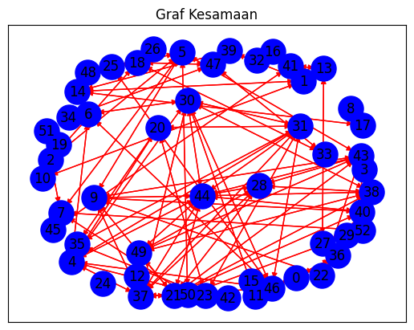

#Ringkasan Berita
import nltk
from nltk.corpus import stopwords
from nltk.tokenize import word_tokenize
import re
import nltk
nltk.download('punkt')
nltk.download('stopwords')
import pandas as pd
import networkx as nx
import matplotlib.pyplot as plt
from tqdm import tqdm
from sklearn.feature_extraction.text import TfidfVectorizer
from sklearn.metrics.pairwise import cosine_similarity
[nltk_data] Downloading package punkt to /root/nltk_data...
[nltk_data] Package punkt is already up-to-date!
[nltk_data] Downloading package stopwords to /root/nltk_data...
[nltk_data] Package stopwords is already up-to-date!
nltk: Natural Language Toolkit, library untuk pemrosesan bahasa alami (NLP) di Python.
stopwords: Kumpulan kata yang sering digunakan dalam bahasa, tetapi tidak memberikan informasi penting (misalnya, “dan”, “atau”, “itu”).
word_tokenize: Fungsi untuk membagi teks menjadi kata-kata (token).
re: Library untuk ekspresi reguler, digunakan untuk manipulasi string.
pandas: Library untuk manipulasi dan analisis data dalam bentuk tabel (DataFrame).
networkx: Library untuk analisis dan visualisasi graf.
matplotlib.pyplot: Library untuk membuat visualisasi grafis dan plot.
tqdm: Library untuk menampilkan progress bar dalam iterasi.
TfidfVectorizer: Digunakan untuk mengubah koleksi dokumen teks menjadi matriks fitur TF-IDF.
cosine_similarity: Fungsi untuk menghitung kesamaan kosinus antara dua vektor.
Mengunduh dataset yang diperlukan untuk tokenisasi dan stopwords dari NLTK:
punkt: Model tokenizer untuk memisahkan kalimat dan kata.
stopwords: Daftar kata umum yang akan dihapus dari teks.
Tokenisasi Teks:
Memecah teks menjadi kata-kata.
tokens = word_tokenize(teks)
Menghapus Stopwords:
Menghapus kata-kata yang tidak memiliki makna penting dari token.
Membersihkan Teks:
Menggunakan ekspresi reguler untuk menghapus karakter tidak diinginkan seperti angka atau tanda baca.
Menghitung TF-IDF:
Menggunakan
TfidfVectorizeruntuk menghitung bobot TF-IDF dari dokumen.
vectorizer = TfidfVectorizer() tfidf_matrix = vectorizer.fit_transform(corpus) - **Menghitung Kesamaan Kosinus**: - Menghitung kesamaan antara dua dokumen berdasarkan matriks TF-IDF.
Visualisasi:
Menggunakan
matplotlibdannetworkxuntuk membuat visualisasi dari data atau graf.
def read_data(file_path):
return pd.read_csv(file_path, sep=',', encoding='utf-8')
data = pd.read_csv('hasil_crowling.csv')
data.head()
| Judul | Tanggal | Ringkasan | Kategori | |
|---|---|---|---|---|
| 0 | Natalius Pigai Satu-satunya Calon Menteri Prab... | 17 Okt 2024 02:12 | Mantan Komisioner Komnas HAM Natalius Pigai tu... | Politik |
| 1 | Ungkap Arahan Prabowo Saat Pembekalan Calon Me... | 17 Okt 2024 01:10 | Sebanyak 59 tokoh hadir mengikuti kegiatan pem... | Peristiwa |
| 2 | Begini Cara Dorong Petani Lokal untuk Capai Pa... | 16 Okt 2024 23:21 | Berikut ini adalah beberapa cara yang dapat me... | News |
| 3 | Presiden Jokowi dan Prabowo Subianto Disebut K... | 16 Okt 2024 20:55 | Jelang pensiunnya Presiden Joko Widodo atau Jo... | Politik |
| 4 | Pembekalan Calon Menteri Prabowo Kelar, Rombon... | 16 Okt 2024 20:10 | Mereka mengantre keluar kediaman lantaran bera... | Politik |
Fungsi read_data#
Tujuan: Membaca file CSV.
Output: Mengembalikan data dalam bentuk tabel (DataFrame).
Parameter: Memerlukan lokasi file CSV yang akan dibaca.
Contoh Penggunaan#
Fungsi ini digunakan untuk memuat data dari file CSV agar bisa dianalisis atau diproses lebih lanjut.
Kesimpulan#
Fungsi ini mempermudah pembacaan data dari file CSV ke dalam format yang siap digunakan.
import re
import nltk
from nltk.corpus import stopwords
from nltk.tokenize import word_tokenize
from tqdm import tqdm
# Fungsi untuk membersihkan teks
def clean_text(input_text):
input_text = re.sub(r'((www\.[^\s]+)|(https?://[^\s]+))', ' ', input_text) # Menghapus URL
input_text = re.sub(r'@[^\s]+', ' ', input_text) # Menghapus username (mention)
input_text = re.sub(r'[\s]+', ' ', input_text) # Menghapus tambahan spasi
input_text = re.sub(r'#([^\s]+)', ' ', input_text) # Menghapus hashtags
input_text = re.sub(r"[^a-zA-Z :\.]", "", input_text) # Menghapus tanda baca yang tidak diperlukan
input_text = re.sub(r'\d', ' ', input_text) # Menghapus angka
input_text = input_text.lower() # Mengubah teks menjadi huruf kecil
input_text = input_text.encode('ascii', 'ignore').decode('utf-8') # Menghapus karakter ASCII dan unicode
input_text = re.sub(r'[^\x00-\x7f]', r'', input_text) # Menghapus karakter non-ASCII
input_text = input_text.replace('\n', '') # Menghapus baris baru
input_text = input_text.strip() # Menghapus spasi di awal dan akhir teks
return input_text
# Fungsi untuk menghapus stopwords
def remove_stopwords(word_tokens):
stopword_list = set(stopwords.words('indonesian')) # Mengambil daftar stopwords dalam Bahasa Indonesia
filtered_words = [word for word in word_tokens if word.lower() not in stopword_list] # Menghapus stopwords dari tokens
return filtered_words
# Fungsi untuk memproses teks
def process_text(content):
processed_result = {}
for idx, text in enumerate(tqdm(content)): # Menggunakan tqdm untuk menampilkan progress
cleaned_text = clean_text(text) # Membersihkan teks
tokens = word_tokenize(cleaned_text) # Tokenisasi teks menjadi kata-kata
filtered_tokens = remove_stopwords(tokens) # Menghapus stopwords
processed_result[idx] = ' '.join(filtered_tokens) # Menggabungkan kata-kata yang sudah dibersihkan menjadi satu string
return processed_result
# Memproses data teks pada kolom 'Ringkasan'
processed_data = process_text(data['Ringkasan'])
# Menampilkan hasil preproses
for key, value in processed_data.items():
print(f"{key}: {value}")
0%| | 0/52 [00:00<?, ?it/s]
100%|██████████| 52/52 [00:00<00:00, 1281.22it/s]
0: mantan komisioner komnas ham natalius pigai menghadiri pembekalan calon menteri kabinet prabowogibran hambalang . menarik pigiai satusatunya calon menteri hadir hambalang menyetir mobil ditemani sopir .
1: tokoh hadir mengikuti kegiatan pembekalan calon menteri prabowogibran digelar padepokan garuda yaksa hambalang bogor jawa barat rabu . prabowo langsung arahan calon pembantunya pemerintahan .
2: membantu petani lokal mencapai panen optimal .
3: jelang pensiunnya presiden joko widodo jokowi digantikan sosok presiden terpilih prabowo subianto bertemu keakraban .
4: mengantre kediaman lantaran kendaraan masingmasing .
5: presiden joko widodo jokowi produksi pangan negara menurun akibat perubahan iklim dunia .
6: menteri hukum hak asasi manusia menkumham supratman andi agtas hadir pembekalan calon menteri kabinet pemerintahan prabowo subianto .
7: pjs . bupati bandung menindaklanjuti kebijakan pemerintah provinsi jawa barat pembatasan pengurangan pengiriman sampah tpa sarimukti kabupaten bandung barat kbb
8: ade safri simanjuntak menyelidiki kebenaran klaim alexander marwata terkait pertemuan .
9: pramono anung mantan sekretaris kabinet mendadak menyambangi kediaman kertanegara jakarta selatan selasa oktober .
10: rekaman diunggah sopir truk melaju sisi kanan ruas jalan cakungcilincing jakarta utara selasa oktober .
11: kabid humas polda metro jaya kombes pol ade ary syam indradi menerangkan kesimpulan tim pemeriksa .
12: tujuan gpm membantu masyarakat memperoleh bahan pokok utamanya beras harga terjangkau harga pasar menjaga ketersediaan bahan pangan .
13: budi arie setiadi jokowi berangkat bandara halim perdanakusuma jakarta timur solo . penerbangan jokowi dijadwalkan . wib .
14: wakil ketua mahkamah agung bidang yudisial sunarto resmi terpilih ketua mahkamah agung ma sidang paripurna khusus pemilihan ketua ma gedung ma jakarta rabu .
15: polisi mendalami dugaan pencabulan aborsi ilegal uang menyeret tiktoker vadel badjideh .
16: hidupnya ismet iskandar dikenal sosok kental keberpihakkannya masyarakat tangerang . t
17: penanaman mangrove wujud program pramonorano dicanangkan jakarta mengubah giant sea wall giant mangrove wall .
18: calon kepala badan intelijen negara bin muhammad herindra mengaku pesan khusus presiden terpilih prabowo subianto dilantik resmi menjabat kepala bin .
19: mulusnya transisi pemerintahan menjaga stabilitas politik indonesia
20: mantan manajer retail pt antam nuning septi wahyuningsih memaparkan transaksi mencurigakan budi said sistem pt antam .
21: dewan perwakilan rakyat dpr ri menerima surat presiden joko widodo jokowi perihal permohonan pertimbangan pemberhentian pengangkatan kepala badan intelijen negara kepala bin .
22: calon gubernur jakarta pramono anung mengaku berteman ketua partai politik indonesia memiliki .
23: herindra puan menitipkan pesan khusus kepala bin menjaga nkri utuh sesuai tugas fungsi bin netral .
24: pengamat politik pemerintahan sulawesi utara taufik tumbelaka menyebut pasangan calon gubernur wakil gubernur sulawesi utara steven kandouwalfrets denny tuejeh skadt pasangan calon realistis masyarakat sulut .
25: mengatasi banjir daerah bantaran kali krukut pemerintah pusat pengerukan pembebasan lahan .
26: berharap belajar mengasah pengetahuan sistem pembelajaran online learning management systemlms .
27: ketua dpp pdi perjuangan puan maharani lugas dikonfirmasi pertemuan presiden terpilih prabowo subianto ketua pdip megawati soekarnoputri .
28: ade ary merincikan pelanggar pelanggar dikenakan sanksi teguran . sisanya pelanggar terkena tilang elektronik etle .
29: prabowogibran dihadapkan tugas berat memulihkan kepercayaan rakyat pemerintahan .
30: erwin perkembangan transaksi digital mendorong mempermudah proses perdagangan industri karet kancah internasional .
31: puan mejelaskan herindra dinyatakan layak proses membawanya rapat paripurna disahkan . rencananya rapat paripurna dilangsungkan besok kamis oktober .
32: polisi memanggil artis olla ramlan saksi pelapor menindaklanjuti laporan polda metro jaya .
33: novita kehadiran perempuan parlemen memperkaya mengisi kursi jabatan .
34: warga diduga mengacungkan senjata api lantaran senang penebangan pohon . beruntung korban jiwa luka insiden .
35: polisi menerangkan akun tiktok instagram menyebarkan postingan bermuatan pencemaran nama olla ramlan
36: pesantren diharapkan lembaga pendidikan unggulan indonesia tujuan internasional dunia islam indonesia
37: polres metro tangerang mengungkap kronologi terbongkarnya pelecehan seksual menimpa anak asuh panti asuhan yayasan darussalam an nur kecamatan pinang kota tangerang banten .
38: presiden joko widodo jokowi meresmikan ruas tol trans sumatera gerbang tol kisaran kabupaten asahan provinsi sumatra utara rabu .
39: presiden terpilih prabowo subianto mengundang tokoh calon menteri kediaman hambalang bogor jawa barat .
40: todotua pertemuan membahas visi pemerintahan prabowo periode .
41: presiden joko widodo jokowi mengaku pesawat komersial pulang solo jawa purnatugas oktober .
42: pb hmi berharap prabowo gibran fokus pembangunan fisik pengembangan mental karakter bangsa .
43: jokowi menanggapi santai kekalahan indonesia china putaran klasemen kualifikasi piala dunia zona asia . jokowi menyebut kalah menang pertandingan sepak bola .
44: pemprov kalimantan selatan diskominfo mendorong perangkat kehumasan aktif terkoordinasi mengelola isu membangun citra positif meningkatkan kepercayaan publik strategi komunikasi responsif .
45: tes . wib herindra menyapa awak media melambaikan tangan juru kamera . mengambil gambar tim pewarta dipersilakan meninggalkan ruang rapat komisi i tes berjalan tertutup .
46: juru bicara prabowo dahnil anzar simanjuntak membagikan jadwal rangkaian pembekalan calon menteri hambalang .
47: lapas narkotika gunung sindur mengikuti kontestasi pembangunan zona integritas wilayah bebas korupsi wbk .
48: jokowi kepala bin pengganti budi gunawan m herindra dilantik menterimenteri kabinet prabowogibran oktober .
49: dewan perwakilan rakyat dpr menggelar fit and proper test calon kepala badan intelijen negara bin pengganti budi gunawan diberhentikan presiden joko widodo jokowi .
50: pj gubernur jawa nana sudjana menerima kunjungan konsul jenderal australia he glen askew kantornya selasa oktober .
51: dekade lpdp memainkan peran memperluas akses pendidikan pendanaan riset indonesia meningkatkan lulusan ss .
Fungsi Utama:#
clean_text: Membersihkan teks dengan menghapus URL, mention, hashtag, tanda baca yang tidak diperlukan, angka, dan karakter non-ASCII. Juga mengubah semua huruf menjadi kecil dan menghapus spasi berlebih.
remove_stopwords: Menghapus kata-kata umum (stopwords) yang tidak memiliki makna signifikan dalam Bahasa Indonesia dari daftar token yang sudah dipecah.
process_text: Menggabungkan kedua fungsi di atas untuk memproses konten teks:
Mengambil teks dari kolom tertentu (dalam hal ini, ‘Ringkasan’).
Menerapkan
clean_textuntuk setiap teks.Melakukan tokenisasi.
Menghapus stopwords.
Menggabungkan kembali token yang tersisa menjadi satu string.
Penggunaan:#
Kode ini digunakan untuk memproses data teks yang biasanya berasal dari hasil crawling, dengan tujuan untuk membersihkan dan mempersiapkan teks agar lebih siap untuk analisis lebih lanjut, seperti pemodelan atau ekstraksi informasi.
print(prep_result[43])
---------------------------------------------------------------------------
NameError Traceback (most recent call last)
<ipython-input-4-ffdeabe9793a> in <cell line: 1>()
----> 1 print(prep_result[43])
NameError: name 'prep_result' is not defined
pip install scikit-learn pandas
Requirement already satisfied: scikit-learn in /usr/local/lib/python3.10/dist-packages (1.5.2)
Requirement already satisfied: pandas in /usr/local/lib/python3.10/dist-packages (2.2.2)
Requirement already satisfied: numpy>=1.19.5 in /usr/local/lib/python3.10/dist-packages (from scikit-learn) (1.26.4)
Requirement already satisfied: scipy>=1.6.0 in /usr/local/lib/python3.10/dist-packages (from scikit-learn) (1.13.1)
Requirement already satisfied: joblib>=1.2.0 in /usr/local/lib/python3.10/dist-packages (from scikit-learn) (1.4.2)
Requirement already satisfied: threadpoolctl>=3.1.0 in /usr/local/lib/python3.10/dist-packages (from scikit-learn) (3.5.0)
Requirement already satisfied: python-dateutil>=2.8.2 in /usr/local/lib/python3.10/dist-packages (from pandas) (2.8.2)
Requirement already satisfied: pytz>=2020.1 in /usr/local/lib/python3.10/dist-packages (from pandas) (2024.2)
Requirement already satisfied: tzdata>=2022.7 in /usr/local/lib/python3.10/dist-packages (from pandas) (2024.2)
Requirement already satisfied: six>=1.5 in /usr/local/lib/python3.10/dist-packages (from python-dateutil>=2.8.2->pandas) (1.16.0)
import pandas as pd
from sklearn.feature_extraction.text import TfidfVectorizer
# Fungsi untuk menghitung TF-IDF
def calculate_tfidf(processed_texts):
vectorizer = TfidfVectorizer()
tfidf_matrix = vectorizer.fit_transform(processed_texts)
feature_names = vectorizer.get_feature_names_out()
tfidf_dataframe = pd.DataFrame(data=tfidf_matrix.toarray(), columns=feature_names)
return tfidf_dataframe
Fungsi Utama:#
calculate_tfidf:
Input: Mengambil daftar teks yang telah diproses (
processed_texts).Proses:
Menggunakan
TfidfVectorizerdarisklearn.feature_extraction.textuntuk menghitung nilai TF-IDF (Term Frequency-Inverse Document Frequency) dari teks yang diberikan.fit_transformdigunakan untuk menghitung matriks TF-IDF, di mana setiap baris mewakili dokumen (teks) dan setiap kolom mewakili kata unik dalam semua dokumen.get_feature_names_outmengembalikan nama fitur (kata-kata) yang digunakan dalam penghitungan.Matriks TF-IDF yang dihasilkan diubah menjadi
DataFramemenggunakanpandas, sehingga lebih mudah untuk dianalisis dan dilihat.
Output: Mengembalikan DataFrame yang berisi nilai TF-IDF untuk setiap kata dalam setiap dokumen.
Kegunaan:#
TF-IDF adalah metode yang umum digunakan dalam pengolahan teks untuk menilai seberapa penting sebuah kata dalam dokumen relatif terhadap koleksi atau korpus dokumen. Ini sering digunakan dalam aplikasi pencarian informasi, klasifikasi teks, dan pemodelan topik.
# Memproses data teks pada kolom 'Ringkasan'
processed_results = preprocess_text(data['Ringkasan'])
# Mengubah hasil preproses ke dalam DataFrame
news_dataframe = pd.DataFrame.from_dict(processed_results, orient='index', columns=['Berita'])
# Menghitung TF-IDF
tfidf_vectorizer = TfidfVectorizer()
tfidf_matrix = tfidf_vectorizer.fit_transform(news_dataframe['Berita'])
# Mendapatkan istilah dari fitur
feature_terms = tfidf_vectorizer.get_feature_names_out()
# Mengubah hasil TF-IDF menjadi DataFrame
tfidf_dataframe = pd.DataFrame(data=tfidf_matrix.toarray(), columns=feature_terms)
# Menampilkan hasil TF-IDF
tfidf_dataframe
100%|██████████| 53/53 [00:00<00:00, 1461.50it/s]
| aceh | ade | adhi | administrasi | akademi | akademisi | akmil | akses | aktif | aktivitas | ... | wakil | wapres | warga | wbk | wib | widodo | wilayah | yayasan | zebra | zona | |
|---|---|---|---|---|---|---|---|---|---|---|---|---|---|---|---|---|---|---|---|---|---|
| 0 | 0.000000 | 0.000000 | 0.000000 | 0.000000 | 0.000000 | 0.000000 | 0.000000 | 0.000000 | 0.000000 | 0.000000 | ... | 0.000000 | 0.000000 | 0.000000 | 0.000000 | 0.000000 | 0.000000 | 0.000000 | 0.000000 | 0.000000 | 0.000000 |
| 1 | 0.000000 | 0.248875 | 0.000000 | 0.000000 | 0.000000 | 0.000000 | 0.000000 | 0.000000 | 0.000000 | 0.000000 | ... | 0.000000 | 0.000000 | 0.000000 | 0.000000 | 0.000000 | 0.000000 | 0.000000 | 0.000000 | 0.000000 | 0.000000 |
| 2 | 0.000000 | 0.000000 | 0.000000 | 0.000000 | 0.000000 | 0.000000 | 0.000000 | 0.000000 | 0.000000 | 0.000000 | ... | 0.000000 | 0.000000 | 0.000000 | 0.000000 | 0.000000 | 0.000000 | 0.000000 | 0.000000 | 0.000000 | 0.000000 |
| 3 | 0.000000 | 0.000000 | 0.000000 | 0.000000 | 0.000000 | 0.000000 | 0.000000 | 0.000000 | 0.000000 | 0.000000 | ... | 0.000000 | 0.000000 | 0.000000 | 0.000000 | 0.000000 | 0.000000 | 0.000000 | 0.000000 | 0.000000 | 0.000000 |
| 4 | 0.000000 | 0.000000 | 0.000000 | 0.000000 | 0.000000 | 0.000000 | 0.000000 | 0.000000 | 0.000000 | 0.000000 | ... | 0.000000 | 0.000000 | 0.000000 | 0.000000 | 0.000000 | 0.182516 | 0.000000 | 0.000000 | 0.000000 | 0.000000 |
| 5 | 0.000000 | 0.000000 | 0.000000 | 0.000000 | 0.000000 | 0.000000 | 0.000000 | 0.000000 | 0.000000 | 0.000000 | ... | 0.000000 | 0.000000 | 0.000000 | 0.000000 | 0.000000 | 0.000000 | 0.000000 | 0.000000 | 0.000000 | 0.000000 |
| 6 | 0.000000 | 0.000000 | 0.000000 | 0.000000 | 0.000000 | 0.000000 | 0.000000 | 0.000000 | 0.000000 | 0.000000 | ... | 0.000000 | 0.000000 | 0.000000 | 0.000000 | 0.000000 | 0.000000 | 0.000000 | 0.000000 | 0.000000 | 0.000000 |
| 7 | 0.000000 | 0.000000 | 0.000000 | 0.000000 | 0.000000 | 0.000000 | 0.000000 | 0.000000 | 0.000000 | 0.000000 | ... | 0.148080 | 0.000000 | 0.000000 | 0.000000 | 0.000000 | 0.000000 | 0.000000 | 0.000000 | 0.000000 | 0.000000 |
| 8 | 0.000000 | 0.000000 | 0.000000 | 0.000000 | 0.000000 | 0.000000 | 0.000000 | 0.000000 | 0.000000 | 0.000000 | ... | 0.000000 | 0.000000 | 0.000000 | 0.000000 | 0.000000 | 0.000000 | 0.000000 | 0.000000 | 0.000000 | 0.000000 |
| 9 | 0.000000 | 0.000000 | 0.000000 | 0.000000 | 0.000000 | 0.000000 | 0.000000 | 0.000000 | 0.000000 | 0.000000 | ... | 0.000000 | 0.000000 | 0.000000 | 0.000000 | 0.000000 | 0.000000 | 0.000000 | 0.000000 | 0.000000 | 0.000000 |
| 10 | 0.000000 | 0.204348 | 0.000000 | 0.000000 | 0.000000 | 0.000000 | 0.000000 | 0.000000 | 0.000000 | 0.000000 | ... | 0.000000 | 0.000000 | 0.000000 | 0.000000 | 0.000000 | 0.000000 | 0.000000 | 0.000000 | 0.000000 | 0.000000 |
| 11 | 0.000000 | 0.000000 | 0.000000 | 0.000000 | 0.000000 | 0.000000 | 0.000000 | 0.000000 | 0.000000 | 0.000000 | ... | 0.000000 | 0.000000 | 0.000000 | 0.000000 | 0.000000 | 0.000000 | 0.000000 | 0.000000 | 0.000000 | 0.000000 |
| 12 | 0.000000 | 0.000000 | 0.000000 | 0.000000 | 0.000000 | 0.000000 | 0.000000 | 0.000000 | 0.000000 | 0.000000 | ... | 0.000000 | 0.000000 | 0.000000 | 0.000000 | 0.000000 | 0.000000 | 0.000000 | 0.000000 | 0.000000 | 0.000000 |
| 13 | 0.000000 | 0.000000 | 0.000000 | 0.000000 | 0.000000 | 0.000000 | 0.000000 | 0.000000 | 0.000000 | 0.000000 | ... | 0.000000 | 0.000000 | 0.000000 | 0.000000 | 0.000000 | 0.000000 | 0.000000 | 0.000000 | 0.000000 | 0.000000 |
| 14 | 0.000000 | 0.000000 | 0.000000 | 0.000000 | 0.000000 | 0.000000 | 0.000000 | 0.000000 | 0.000000 | 0.000000 | ... | 0.000000 | 0.000000 | 0.000000 | 0.000000 | 0.000000 | 0.000000 | 0.000000 | 0.000000 | 0.000000 | 0.000000 |
| 15 | 0.000000 | 0.000000 | 0.000000 | 0.000000 | 0.000000 | 0.000000 | 0.000000 | 0.000000 | 0.000000 | 0.000000 | ... | 0.000000 | 0.000000 | 0.000000 | 0.000000 | 0.000000 | 0.000000 | 0.000000 | 0.000000 | 0.000000 | 0.000000 |
| 16 | 0.000000 | 0.000000 | 0.000000 | 0.000000 | 0.000000 | 0.000000 | 0.000000 | 0.000000 | 0.000000 | 0.000000 | ... | 0.000000 | 0.000000 | 0.267261 | 0.000000 | 0.000000 | 0.000000 | 0.000000 | 0.000000 | 0.000000 | 0.000000 |
| 17 | 0.000000 | 0.000000 | 0.000000 | 0.000000 | 0.000000 | 0.000000 | 0.000000 | 0.000000 | 0.000000 | 0.000000 | ... | 0.000000 | 0.000000 | 0.000000 | 0.000000 | 0.000000 | 0.000000 | 0.000000 | 0.000000 | 0.000000 | 0.000000 |
| 18 | 0.000000 | 0.000000 | 0.000000 | 0.000000 | 0.000000 | 0.000000 | 0.000000 | 0.000000 | 0.000000 | 0.000000 | ... | 0.000000 | 0.000000 | 0.000000 | 0.000000 | 0.000000 | 0.000000 | 0.000000 | 0.000000 | 0.000000 | 0.000000 |
| 19 | 0.000000 | 0.000000 | 0.000000 | 0.000000 | 0.000000 | 0.000000 | 0.000000 | 0.000000 | 0.000000 | 0.000000 | ... | 0.000000 | 0.000000 | 0.000000 | 0.000000 | 0.000000 | 0.000000 | 0.000000 | 0.210937 | 0.000000 | 0.000000 |
| 20 | 0.000000 | 0.000000 | 0.000000 | 0.000000 | 0.000000 | 0.000000 | 0.000000 | 0.000000 | 0.000000 | 0.000000 | ... | 0.000000 | 0.000000 | 0.000000 | 0.000000 | 0.000000 | 0.183667 | 0.000000 | 0.000000 | 0.000000 | 0.000000 |
| 21 | 0.000000 | 0.000000 | 0.000000 | 0.000000 | 0.000000 | 0.000000 | 0.000000 | 0.000000 | 0.000000 | 0.000000 | ... | 0.000000 | 0.000000 | 0.000000 | 0.000000 | 0.000000 | 0.000000 | 0.000000 | 0.000000 | 0.000000 | 0.000000 |
| 22 | 0.000000 | 0.000000 | 0.000000 | 0.000000 | 0.000000 | 0.000000 | 0.000000 | 0.000000 | 0.000000 | 0.000000 | ... | 0.000000 | 0.000000 | 0.000000 | 0.000000 | 0.000000 | 0.000000 | 0.000000 | 0.000000 | 0.000000 | 0.000000 |
| 23 | 0.000000 | 0.000000 | 0.000000 | 0.000000 | 0.000000 | 0.000000 | 0.000000 | 0.000000 | 0.000000 | 0.000000 | ... | 0.000000 | 0.000000 | 0.000000 | 0.000000 | 0.000000 | 0.252543 | 0.000000 | 0.000000 | 0.000000 | 0.000000 |
| 24 | 0.000000 | 0.000000 | 0.000000 | 0.000000 | 0.000000 | 0.000000 | 0.000000 | 0.000000 | 0.000000 | 0.000000 | ... | 0.000000 | 0.000000 | 0.000000 | 0.000000 | 0.000000 | 0.000000 | 0.000000 | 0.000000 | 0.000000 | 0.000000 |
| 25 | 0.000000 | 0.000000 | 0.000000 | 0.000000 | 0.000000 | 0.000000 | 0.000000 | 0.000000 | 0.000000 | 0.000000 | ... | 0.000000 | 0.000000 | 0.000000 | 0.000000 | 0.000000 | 0.000000 | 0.000000 | 0.000000 | 0.000000 | 0.212937 |
| 26 | 0.000000 | 0.000000 | 0.000000 | 0.000000 | 0.000000 | 0.000000 | 0.000000 | 0.000000 | 0.228059 | 0.000000 | ... | 0.000000 | 0.000000 | 0.000000 | 0.000000 | 0.000000 | 0.000000 | 0.000000 | 0.000000 | 0.000000 | 0.000000 |
| 27 | 0.000000 | 0.000000 | 0.000000 | 0.000000 | 0.000000 | 0.000000 | 0.000000 | 0.000000 | 0.000000 | 0.000000 | ... | 0.000000 | 0.000000 | 0.000000 | 0.000000 | 0.209508 | 0.000000 | 0.000000 | 0.000000 | 0.000000 | 0.000000 |
| 28 | 0.000000 | 0.000000 | 0.000000 | 0.000000 | 0.000000 | 0.000000 | 0.000000 | 0.000000 | 0.000000 | 0.000000 | ... | 0.000000 | 0.000000 | 0.000000 | 0.000000 | 0.000000 | 0.000000 | 0.000000 | 0.000000 | 0.000000 | 0.000000 |
| 29 | 0.000000 | 0.000000 | 0.000000 | 0.000000 | 0.000000 | 0.000000 | 0.000000 | 0.000000 | 0.000000 | 0.000000 | ... | 0.000000 | 0.000000 | 0.000000 | 0.285607 | 0.000000 | 0.000000 | 0.258650 | 0.000000 | 0.000000 | 0.258650 |
| 30 | 0.000000 | 0.000000 | 0.000000 | 0.000000 | 0.000000 | 0.000000 | 0.000000 | 0.000000 | 0.000000 | 0.000000 | ... | 0.000000 | 0.000000 | 0.000000 | 0.000000 | 0.000000 | 0.000000 | 0.000000 | 0.000000 | 0.000000 | 0.000000 |
| 31 | 0.000000 | 0.000000 | 0.000000 | 0.000000 | 0.000000 | 0.000000 | 0.000000 | 0.000000 | 0.000000 | 0.000000 | ... | 0.000000 | 0.000000 | 0.000000 | 0.000000 | 0.000000 | 0.184431 | 0.000000 | 0.000000 | 0.000000 | 0.000000 |
| 32 | 0.000000 | 0.000000 | 0.000000 | 0.000000 | 0.000000 | 0.000000 | 0.000000 | 0.000000 | 0.000000 | 0.000000 | ... | 0.000000 | 0.000000 | 0.000000 | 0.000000 | 0.000000 | 0.000000 | 0.000000 | 0.000000 | 0.000000 | 0.000000 |
| 33 | 0.000000 | 0.000000 | 0.000000 | 0.000000 | 0.000000 | 0.000000 | 0.000000 | 0.291996 | 0.000000 | 0.000000 | ... | 0.000000 | 0.000000 | 0.000000 | 0.000000 | 0.000000 | 0.000000 | 0.000000 | 0.000000 | 0.000000 | 0.000000 |
| 34 | 0.000000 | 0.000000 | 0.000000 | 0.000000 | 0.000000 | 0.000000 | 0.000000 | 0.000000 | 0.000000 | 0.000000 | ... | 0.000000 | 0.000000 | 0.000000 | 0.000000 | 0.000000 | 0.000000 | 0.000000 | 0.000000 | 0.000000 | 0.000000 |
| 35 | 0.000000 | 0.000000 | 0.000000 | 0.000000 | 0.000000 | 0.000000 | 0.000000 | 0.000000 | 0.000000 | 0.000000 | ... | 0.000000 | 0.000000 | 0.000000 | 0.000000 | 0.000000 | 0.242485 | 0.000000 | 0.000000 | 0.000000 | 0.000000 |
| 36 | 0.000000 | 0.000000 | 0.330733 | 0.000000 | 0.330733 | 0.000000 | 0.330733 | 0.000000 | 0.000000 | 0.000000 | ... | 0.000000 | 0.000000 | 0.000000 | 0.000000 | 0.000000 | 0.000000 | 0.000000 | 0.000000 | 0.000000 | 0.000000 |
| 37 | 0.000000 | 0.000000 | 0.000000 | 0.000000 | 0.000000 | 0.000000 | 0.000000 | 0.000000 | 0.000000 | 0.000000 | ... | 0.000000 | 0.000000 | 0.000000 | 0.000000 | 0.000000 | 0.000000 | 0.000000 | 0.000000 | 0.000000 | 0.000000 |
| 38 | 0.000000 | 0.000000 | 0.000000 | 0.000000 | 0.000000 | 0.000000 | 0.000000 | 0.000000 | 0.000000 | 0.000000 | ... | 0.000000 | 0.000000 | 0.000000 | 0.000000 | 0.000000 | 0.000000 | 0.000000 | 0.000000 | 0.000000 | 0.000000 |
| 39 | 0.000000 | 0.000000 | 0.000000 | 0.000000 | 0.000000 | 0.000000 | 0.000000 | 0.000000 | 0.000000 | 0.000000 | ... | 0.000000 | 0.214641 | 0.000000 | 0.000000 | 0.000000 | 0.000000 | 0.194382 | 0.000000 | 0.214641 | 0.000000 |
| 40 | 0.000000 | 0.000000 | 0.000000 | 0.000000 | 0.000000 | 0.000000 | 0.000000 | 0.000000 | 0.000000 | 0.000000 | ... | 0.000000 | 0.000000 | 0.000000 | 0.000000 | 0.000000 | 0.000000 | 0.000000 | 0.000000 | 0.000000 | 0.000000 |
| 41 | 0.000000 | 0.000000 | 0.000000 | 0.000000 | 0.000000 | 0.000000 | 0.000000 | 0.000000 | 0.000000 | 0.000000 | ... | 0.000000 | 0.000000 | 0.000000 | 0.000000 | 0.000000 | 0.000000 | 0.000000 | 0.000000 | 0.000000 | 0.000000 |
| 42 | 0.269189 | 0.000000 | 0.000000 | 0.000000 | 0.000000 | 0.000000 | 0.000000 | 0.000000 | 0.000000 | 0.000000 | ... | 0.000000 | 0.000000 | 0.000000 | 0.000000 | 0.000000 | 0.000000 | 0.000000 | 0.000000 | 0.000000 | 0.000000 |
| 43 | 0.000000 | 0.000000 | 0.000000 | 0.000000 | 0.000000 | 0.000000 | 0.000000 | 0.000000 | 0.000000 | 0.000000 | ... | 0.205133 | 0.000000 | 0.000000 | 0.000000 | 0.000000 | 0.000000 | 0.000000 | 0.000000 | 0.000000 | 0.000000 |
| 44 | 0.000000 | 0.000000 | 0.000000 | 0.000000 | 0.000000 | 0.000000 | 0.000000 | 0.000000 | 0.000000 | 0.000000 | ... | 0.252763 | 0.000000 | 0.000000 | 0.000000 | 0.000000 | 0.000000 | 0.000000 | 0.000000 | 0.000000 | 0.000000 |
| 45 | 0.000000 | 0.000000 | 0.000000 | 0.000000 | 0.000000 | 0.000000 | 0.000000 | 0.000000 | 0.000000 | 0.000000 | ... | 0.000000 | 0.000000 | 0.000000 | 0.000000 | 0.000000 | 0.000000 | 0.000000 | 0.000000 | 0.000000 | 0.000000 |
| 46 | 0.000000 | 0.000000 | 0.000000 | 0.000000 | 0.000000 | 0.000000 | 0.000000 | 0.000000 | 0.000000 | 0.000000 | ... | 0.000000 | 0.000000 | 0.000000 | 0.000000 | 0.000000 | 0.000000 | 0.000000 | 0.000000 | 0.000000 | 0.000000 |
| 47 | 0.000000 | 0.000000 | 0.000000 | 0.252652 | 0.000000 | 0.000000 | 0.000000 | 0.000000 | 0.000000 | 0.252652 | ... | 0.000000 | 0.000000 | 0.000000 | 0.000000 | 0.000000 | 0.000000 | 0.000000 | 0.000000 | 0.000000 | 0.000000 |
| 48 | 0.000000 | 0.000000 | 0.000000 | 0.000000 | 0.000000 | 0.000000 | 0.000000 | 0.000000 | 0.000000 | 0.000000 | ... | 0.000000 | 0.000000 | 0.000000 | 0.000000 | 0.000000 | 0.000000 | 0.000000 | 0.000000 | 0.000000 | 0.000000 |
| 49 | 0.000000 | 0.000000 | 0.000000 | 0.000000 | 0.000000 | 0.304782 | 0.000000 | 0.000000 | 0.000000 | 0.000000 | ... | 0.226837 | 0.000000 | 0.000000 | 0.000000 | 0.000000 | 0.000000 | 0.000000 | 0.000000 | 0.000000 | 0.000000 |
| 50 | 0.000000 | 0.000000 | 0.000000 | 0.000000 | 0.000000 | 0.000000 | 0.000000 | 0.000000 | 0.000000 | 0.000000 | ... | 0.188769 | 0.000000 | 0.000000 | 0.000000 | 0.000000 | 0.000000 | 0.000000 | 0.000000 | 0.000000 | 0.000000 |
| 51 | 0.000000 | 0.000000 | 0.000000 | 0.000000 | 0.000000 | 0.000000 | 0.000000 | 0.000000 | 0.000000 | 0.000000 | ... | 0.000000 | 0.000000 | 0.000000 | 0.000000 | 0.000000 | 0.000000 | 0.000000 | 0.000000 | 0.000000 | 0.000000 |
| 52 | 0.000000 | 0.000000 | 0.000000 | 0.000000 | 0.000000 | 0.000000 | 0.000000 | 0.000000 | 0.000000 | 0.000000 | ... | 0.000000 | 0.000000 | 0.000000 | 0.000000 | 0.000000 | 0.000000 | 0.000000 | 0.000000 | 0.000000 | 0.000000 |
53 rows × 495 columns
Langkah-langkah:#
Proses Teks:
Fungsi
preprocess_textditerapkan pada kolomRingkasandari DataFrame untuk membersihkan teks (menghapus stopwords, melakukan tokenisasi).
Buat DataFrame:
Hasil pemrosesan disimpan dalam DataFrame
news_dataframedengan satu kolom berisi berita.
Hitung TF-IDF:
TfidfVectorizerdigunakan untuk menghitung matriks TF-IDF dari teks yang telah diproses.
Ambil Istilah:
Istilah unik yang digunakan dalam perhitungan TF-IDF diambil dari
tfidf_vectorizer.
Ubah ke DataFrame:
Matriks TF-IDF diubah menjadi DataFrame
tfidf_dataframe, di mana kolom mewakili kata dan baris mewakili berita.
Tampilkan Hasil:
DataFrame
tfidf_dataframeditampilkan untuk menunjukkan nilai TF-IDF.
Kegunaan:#
Nilai TF-IDF digunakan untuk analisis teks, pengklasifikasian berita, dan rekomendasi konten.
#Matrix Similarity Matriks Similarity adalah sebuah representasi matematis yang digunakan untuk mengukur kesamaan (similarity) antara objek-objek dalam suatu dataset. Dalam konteks pengolahan data, matriks ini sering digunakan untuk membandingkan teks, dokumen, atau elemen lain untuk menentukan sejauh mana mereka mirip satu sama lain. Berikut adalah penjelasan lebih rinci tentang matriks similarity:
1. Definisi#
Matriks similarity adalah matriks yang menyimpan nilai-nilai yang menunjukkan derajat kesamaan antara sepasang objek. Setiap elemen \(( S(i, j) \)) dalam matriks tersebut merepresentasikan tingkat kesamaan antara objek \(( i \)) dan objek \(( j \)).
2. Penggunaan#
Rekomendasi: Dalam sistem rekomendasi, matriks similarity digunakan untuk menemukan item yang mirip berdasarkan interaksi pengguna sebelumnya. Misalnya, jika pengguna menyukai film tertentu, sistem dapat merekomendasikan film lain yang mirip berdasarkan matriks similarity.
Klasifikasi Teks: Dalam pengolahan bahasa alami, matriks similarity digunakan untuk mengelompokkan dokumen atau kalimat berdasarkan kesamaan kontennya.
Clustering: Dalam analisis kluster, matriks similarity dapat digunakan untuk mengelompokkan data berdasarkan kedekatannya satu sama lain.
3. Metode Menghitung Similarity#
Berbagai metode dapat digunakan untuk menghitung nilai kesamaan antara objek, di antaranya:
Cosine Similarity: Mengukur sudut antara dua vektor dalam ruang multidimensi. Nilai cosine similarity berkisar antara -1 dan 1, di mana 1 menunjukkan kesamaan penuh, 0 menunjukkan ketidakberhubungan, dan -1 menunjukkan ketidakcocokan.
\[ \text{Cosine Similarity} = \frac{A \cdot B}{\|A\| \|B\|} \]Euclidean Distance: Mengukur jarak langsung antara dua titik dalam ruang. Semakin kecil jarak, semakin mirip objeknya.
Jaccard Similarity: Mengukur kesamaan antara dua himpunan dengan rumus:
\[ \text{Jaccard Similarity} = \frac{|A \cap B|}{|A \cup B|} \]
4. Kesimpulan#
Matriks similarity adalah alat yang sangat berguna dalam analisis data untuk mengukur kesamaan antara objek-objek. Dengan menggunakan matriks ini, kita dapat membuat keputusan yang lebih baik dalam rekomendasi, klasifikasi, dan pengelompokan data.
import pandas as pd
# Fungsi untuk menampilkan similarity matrix
def display_similarity_matrix(similarity_matrix):
print("Cosine Similarity Matrix:")
print(similarity_matrix)
# Main execution
if __name__ == "__main__":
# Membaca data
data = read_data('hasil_crowling.csv')
# Memproses data teks pada kolom 'Ringkasan'
prep_result = preprocess_text(data['Ringkasan'])
# Mengubah hasil preproses ke dalam DataFrame
kalimat_preprocessing = pd.DataFrame.from_dict(prep_result, orient='index', columns=['Ringkasan'])
# Menghitung TF-IDF
tfidf_preprocessing_df = compute_tfidf(kalimat_preprocessing['Ringkasan'])
# Menghitung cosine similarity
similarity_matrix = tfidf_preprocessing_df.dot(tfidf_preprocessing_df.T)
100%|██████████| 53/53 [00:00<00:00, 370.65it/s]
Langkah-langkah Kode:#
Import Library:
Mengimpor pustaka
pandasuntuk manipulasi data.
Fungsi
display_similarity_matrix:Fungsi ini menampilkan matriks kesamaan cosine yang telah dihitung.
Eksekusi Utama:
Membaca Data: Memanggil fungsi
read_datauntuk membaca data dari file CSVhasil_crowling.csv.Proses Teks: Menggunakan
preprocess_textuntuk memproses kolomRingkasandari DataFrame.Ubah Hasil ke DataFrame: Mengubah hasil pemrosesan menjadi DataFrame
kalimat_preprocessingdengan satu kolom.Hitung TF-IDF: Memanggil
compute_tfidfuntuk menghitung nilai TF-IDF dari kolomRingkasan.Hitung Matriks Kesamaan: Matriks kesamaan cosine dihitung dengan mengalikan matriks TF-IDF dengan transposenya menggunakan operasi
dot.
Kegunaan:#
Matriks Kesamaan Cosine: Matriks ini menggambarkan tingkat kesamaan antara dokumen yang ada berdasarkan representasi TF-IDF mereka. Nilai yang lebih tinggi menunjukkan kesamaan yang lebih besar antara dokumen.
similarity_matrix
| 0 | 1 | 2 | 3 | 4 | 5 | 6 | 7 | 8 | 9 | ... | 43 | 44 | 45 | 46 | 47 | 48 | 49 | 50 | 51 | 52 | |
|---|---|---|---|---|---|---|---|---|---|---|---|---|---|---|---|---|---|---|---|---|---|
| 0 | 1.000000 | 0.000000 | 0.000000 | 0.000000 | 0.000000 | 0.053442 | 0.000000 | 0.063559 | 0.0 | 0.000000 | ... | 0.044023 | 0.000000 | 0.000000 | 0.000000 | 0.000000 | 0.070228 | 0.000000 | 0.040511 | 0.000000 | 0.068468 |
| 1 | 0.000000 | 1.000000 | 0.000000 | 0.000000 | 0.000000 | 0.000000 | 0.000000 | 0.000000 | 0.0 | 0.000000 | ... | 0.000000 | 0.000000 | 0.000000 | 0.000000 | 0.000000 | 0.000000 | 0.000000 | 0.000000 | 0.050203 | 0.000000 |
| 2 | 0.000000 | 0.000000 | 1.000000 | 0.000000 | 0.000000 | 0.170708 | 0.095603 | 0.105903 | 0.0 | 0.000000 | ... | 0.064636 | 0.000000 | 0.040568 | 0.000000 | 0.000000 | 0.000000 | 0.000000 | 0.000000 | 0.000000 | 0.000000 |
| 3 | 0.000000 | 0.000000 | 0.000000 | 1.000000 | 0.000000 | 0.000000 | 0.000000 | 0.000000 | 0.0 | 0.000000 | ... | 0.000000 | 0.000000 | 0.000000 | 0.058397 | 0.000000 | 0.000000 | 0.000000 | 0.000000 | 0.000000 | 0.000000 |
| 4 | 0.000000 | 0.000000 | 0.000000 | 0.000000 | 1.000000 | 0.000000 | 0.124799 | 0.000000 | 0.0 | 0.022101 | ... | 0.000000 | 0.150192 | 0.000000 | 0.201021 | 0.000000 | 0.000000 | 0.063133 | 0.000000 | 0.000000 | 0.000000 |
| 5 | 0.053442 | 0.000000 | 0.170708 | 0.000000 | 0.000000 | 1.000000 | 0.000000 | 0.181287 | 0.0 | 0.124832 | ... | 0.202345 | 0.044437 | 0.032061 | 0.000000 | 0.000000 | 0.081488 | 0.039879 | 0.138229 | 0.000000 | 0.000000 |
| 6 | 0.000000 | 0.000000 | 0.095603 | 0.000000 | 0.124799 | 0.000000 | 1.000000 | 0.000000 | 0.0 | 0.045198 | ... | 0.000000 | 0.039493 | 0.000000 | 0.122579 | 0.000000 | 0.000000 | 0.035442 | 0.000000 | 0.000000 | 0.000000 |
| 7 | 0.063559 | 0.000000 | 0.105903 | 0.000000 | 0.000000 | 0.181287 | 0.000000 | 1.000000 | 0.0 | 0.000000 | ... | 0.060752 | 0.090278 | 0.000000 | 0.032317 | 0.000000 | 0.000000 | 0.081018 | 0.561669 | 0.000000 | 0.121543 |
| 8 | 0.000000 | 0.000000 | 0.000000 | 0.000000 | 0.000000 | 0.000000 | 0.000000 | 0.000000 | 1.0 | 0.000000 | ... | 0.000000 | 0.000000 | 0.000000 | 0.000000 | 0.000000 | 0.000000 | 0.000000 | 0.000000 | 0.000000 | 0.000000 |
| 9 | 0.000000 | 0.000000 | 0.000000 | 0.000000 | 0.022101 | 0.124832 | 0.045198 | 0.000000 | 0.0 | 1.000000 | ... | 0.108228 | 0.145811 | 0.000000 | 0.000000 | 0.000000 | 0.000000 | 0.025740 | 0.000000 | 0.000000 | 0.000000 |
| 10 | 0.000000 | 0.101714 | 0.000000 | 0.000000 | 0.000000 | 0.000000 | 0.000000 | 0.000000 | 0.0 | 0.000000 | ... | 0.000000 | 0.000000 | 0.000000 | 0.000000 | 0.000000 | 0.000000 | 0.000000 | 0.000000 | 0.000000 | 0.000000 |
| 11 | 0.000000 | 0.000000 | 0.092096 | 0.000000 | 0.067735 | 0.000000 | 0.088681 | 0.043281 | 0.0 | 0.000000 | ... | 0.059957 | 0.000000 | 0.000000 | 0.063787 | 0.000000 | 0.000000 | 0.000000 | 0.000000 | 0.000000 | 0.000000 |
| 12 | 0.000000 | 0.000000 | 0.000000 | 0.055736 | 0.000000 | 0.000000 | 0.000000 | 0.000000 | 0.0 | 0.000000 | ... | 0.000000 | 0.000000 | 0.000000 | 0.000000 | 0.000000 | 0.000000 | 0.000000 | 0.000000 | 0.000000 | 0.000000 |
| 13 | 0.030904 | 0.000000 | 0.000000 | 0.000000 | 0.000000 | 0.000000 | 0.072093 | 0.000000 | 0.0 | 0.038352 | ... | 0.000000 | 0.000000 | 0.000000 | 0.027074 | 0.000000 | 0.000000 | 0.000000 | 0.000000 | 0.000000 | 0.000000 |
| 14 | 0.000000 | 0.168364 | 0.000000 | 0.000000 | 0.000000 | 0.000000 | 0.000000 | 0.000000 | 0.0 | 0.000000 | ... | 0.000000 | 0.000000 | 0.000000 | 0.000000 | 0.000000 | 0.000000 | 0.078109 | 0.000000 | 0.057085 | 0.000000 |
| 15 | 0.000000 | 0.000000 | 0.000000 | 0.000000 | 0.000000 | 0.000000 | 0.000000 | 0.000000 | 0.0 | 0.000000 | ... | 0.000000 | 0.000000 | 0.000000 | 0.068522 | 0.000000 | 0.000000 | 0.000000 | 0.000000 | 0.000000 | 0.000000 |
| 16 | 0.000000 | 0.000000 | 0.000000 | 0.000000 | 0.000000 | 0.000000 | 0.000000 | 0.000000 | 0.0 | 0.000000 | ... | 0.000000 | 0.000000 | 0.000000 | 0.000000 | 0.000000 | 0.000000 | 0.000000 | 0.000000 | 0.000000 | 0.000000 |
| 17 | 0.000000 | 0.067647 | 0.000000 | 0.000000 | 0.000000 | 0.000000 | 0.000000 | 0.000000 | 0.0 | 0.000000 | ... | 0.000000 | 0.000000 | 0.000000 | 0.000000 | 0.000000 | 0.000000 | 0.000000 | 0.000000 | 0.000000 | 0.000000 |
| 18 | 0.000000 | 0.000000 | 0.135214 | 0.000000 | 0.000000 | 0.106860 | 0.000000 | 0.000000 | 0.0 | 0.000000 | ... | 0.000000 | 0.000000 | 0.060989 | 0.051690 | 0.122491 | 0.000000 | 0.079547 | 0.000000 | 0.000000 | 0.000000 |
| 19 | 0.000000 | 0.032110 | 0.000000 | 0.000000 | 0.000000 | 0.000000 | 0.000000 | 0.000000 | 0.0 | 0.000000 | ... | 0.000000 | 0.000000 | 0.000000 | 0.000000 | 0.000000 | 0.000000 | 0.000000 | 0.000000 | 0.209695 | 0.000000 |
| 20 | 0.097776 | 0.000000 | 0.000000 | 0.000000 | 0.108170 | 0.000000 | 0.000000 | 0.054395 | 0.0 | 0.022240 | ... | 0.000000 | 0.028477 | 0.029166 | 0.038729 | 0.000000 | 0.067152 | 0.000000 | 0.034671 | 0.000000 | 0.000000 |
| 21 | 0.000000 | 0.000000 | 0.000000 | 0.000000 | 0.029564 | 0.046424 | 0.000000 | 0.055213 | 0.0 | 0.152333 | ... | 0.228310 | 0.363106 | 0.000000 | 0.000000 | 0.000000 | 0.000000 | 0.312076 | 0.035192 | 0.000000 | 0.000000 |
| 22 | 0.000000 | 0.000000 | 0.099882 | 0.000000 | 0.000000 | 0.000000 | 0.000000 | 0.046940 | 0.0 | 0.128618 | ... | 0.102403 | 0.046057 | 0.000000 | 0.000000 | 0.000000 | 0.000000 | 0.041333 | 0.000000 | 0.000000 | 0.000000 |
| 23 | 0.044883 | 0.000000 | 0.000000 | 0.000000 | 0.148735 | 0.093112 | 0.000000 | 0.000000 | 0.0 | 0.030580 | ... | 0.000000 | 0.039156 | 0.000000 | 0.053252 | 0.000000 | 0.000000 | 0.000000 | 0.000000 | 0.000000 | 0.000000 |
| 24 | 0.000000 | 0.000000 | 0.000000 | 0.000000 | 0.000000 | 0.000000 | 0.000000 | 0.000000 | 0.0 | 0.025536 | ... | 0.026536 | 0.032698 | 0.000000 | 0.000000 | 0.047281 | 0.000000 | 0.029344 | 0.000000 | 0.000000 | 0.000000 |
| 25 | 0.000000 | 0.000000 | 0.049952 | 0.000000 | 0.039185 | 0.039477 | 0.000000 | 0.032903 | 0.0 | 0.000000 | ... | 0.000000 | 0.000000 | 0.022531 | 0.150184 | 0.000000 | 0.000000 | 0.000000 | 0.000000 | 0.000000 | 0.000000 |
| 26 | 0.000000 | 0.000000 | 0.000000 | 0.000000 | 0.000000 | 0.000000 | 0.000000 | 0.000000 | 0.0 | 0.000000 | ... | 0.000000 | 0.000000 | 0.000000 | 0.037043 | 0.040525 | 0.000000 | 0.000000 | 0.000000 | 0.000000 | 0.000000 |
| 27 | 0.000000 | 0.047220 | 0.000000 | 0.000000 | 0.000000 | 0.000000 | 0.028947 | 0.000000 | 0.0 | 0.000000 | ... | 0.000000 | 0.000000 | 0.000000 | 0.024279 | 0.000000 | 0.000000 | 0.000000 | 0.000000 | 0.000000 | 0.000000 |
| 28 | 0.000000 | 0.000000 | 0.000000 | 0.000000 | 0.000000 | 0.041193 | 0.000000 | 0.048991 | 0.0 | 0.026588 | ... | 0.114713 | 0.249333 | 0.000000 | 0.000000 | 0.000000 | 0.000000 | 0.283144 | 0.031226 | 0.000000 | 0.000000 |
| 29 | 0.000000 | 0.000000 | 0.000000 | 0.000000 | 0.000000 | 0.000000 | 0.000000 | 0.000000 | 0.0 | 0.000000 | ... | 0.000000 | 0.000000 | 0.000000 | 0.000000 | 0.044659 | 0.000000 | 0.000000 | 0.000000 | 0.000000 | 0.000000 |
| 30 | 0.048173 | 0.000000 | 0.000000 | 0.046046 | 0.150600 | 0.000000 | 0.193304 | 0.000000 | 0.0 | 0.000000 | ... | 0.000000 | 0.128785 | 0.000000 | 0.374365 | 0.000000 | 0.000000 | 0.046879 | 0.000000 | 0.000000 | 0.000000 |
| 31 | 0.000000 | 0.000000 | 0.000000 | 0.031331 | 0.505794 | 0.032424 | 0.097292 | 0.038562 | 0.0 | 0.022333 | ... | 0.000000 | 0.149135 | 0.000000 | 0.266262 | 0.000000 | 0.000000 | 0.061433 | 0.024579 | 0.000000 | 0.000000 |
| 32 | 0.098008 | 0.000000 | 0.000000 | 0.000000 | 0.053454 | 0.055036 | 0.000000 | 0.065454 | 0.0 | 0.000000 | ... | 0.000000 | 0.000000 | 0.000000 | 0.000000 | 0.000000 | 0.000000 | 0.000000 | 0.083440 | 0.000000 | 0.000000 |
| 33 | 0.000000 | 0.000000 | 0.062033 | 0.000000 | 0.000000 | 0.049025 | 0.000000 | 0.000000 | 0.0 | 0.000000 | ... | 0.000000 | 0.000000 | 0.027980 | 0.000000 | 0.103774 | 0.000000 | 0.000000 | 0.000000 | 0.000000 | 0.000000 |
| 34 | 0.000000 | 0.000000 | 0.000000 | 0.000000 | 0.034662 | 0.000000 | 0.000000 | 0.000000 | 0.0 | 0.000000 | ... | 0.000000 | 0.000000 | 0.000000 | 0.065284 | 0.151243 | 0.000000 | 0.000000 | 0.000000 | 0.000000 | 0.000000 |
| 35 | 0.052039 | 0.000000 | 0.000000 | 0.000000 | 0.142811 | 0.000000 | 0.000000 | 0.071815 | 0.0 | 0.029362 | ... | 0.000000 | 0.037597 | 0.038506 | 0.051131 | 0.000000 | 0.088658 | 0.000000 | 0.045774 | 0.000000 | 0.000000 |
| 36 | 0.000000 | 0.000000 | 0.000000 | 0.000000 | 0.000000 | 0.000000 | 0.045696 | 0.000000 | 0.0 | 0.000000 | ... | 0.000000 | 0.000000 | 0.000000 | 0.100969 | 0.000000 | 0.000000 | 0.000000 | 0.000000 | 0.000000 | 0.000000 |
| 37 | 0.000000 | 0.000000 | 0.000000 | 0.074634 | 0.216609 | 0.000000 | 0.093429 | 0.000000 | 0.0 | 0.102168 | ... | 0.087301 | 0.264987 | 0.000000 | 0.179693 | 0.000000 | 0.000000 | 0.183674 | 0.000000 | 0.000000 | 0.000000 |
| 38 | 0.000000 | 0.000000 | 0.000000 | 0.000000 | 0.025087 | 0.039394 | 0.000000 | 0.046852 | 0.0 | 0.062059 | ... | 0.277019 | 0.387972 | 0.000000 | 0.047251 | 0.000000 | 0.000000 | 0.300120 | 0.029863 | 0.000000 | 0.000000 |
| 39 | 0.056783 | 0.157134 | 0.000000 | 0.000000 | 0.017885 | 0.000000 | 0.000000 | 0.000000 | 0.0 | 0.066039 | ... | 0.018837 | 0.084558 | 0.000000 | 0.000000 | 0.000000 | 0.000000 | 0.020830 | 0.000000 | 0.039211 | 0.000000 |
| 40 | 0.000000 | 0.000000 | 0.000000 | 0.000000 | 0.066834 | 0.055291 | 0.040039 | 0.000000 | 0.0 | 0.416992 | ... | 0.141420 | 0.178552 | 0.000000 | 0.000000 | 0.000000 | 0.000000 | 0.022801 | 0.000000 | 0.000000 | 0.000000 |
| 41 | 0.072292 | 0.000000 | 0.000000 | 0.000000 | 0.000000 | 0.045885 | 0.000000 | 0.000000 | 0.0 | 0.000000 | ... | 0.037798 | 0.000000 | 0.426515 | 0.000000 | 0.000000 | 0.060297 | 0.000000 | 0.000000 | 0.000000 | 0.000000 |
| 42 | 0.000000 | 0.000000 | 0.000000 | 0.000000 | 0.022430 | 0.000000 | 0.000000 | 0.000000 | 0.0 | 0.000000 | ... | 0.000000 | 0.000000 | 0.000000 | 0.042246 | 0.000000 | 0.000000 | 0.000000 | 0.000000 | 0.000000 | 0.000000 |
| 43 | 0.044023 | 0.000000 | 0.064636 | 0.000000 | 0.000000 | 0.202345 | 0.000000 | 0.060752 | 0.0 | 0.108228 | ... | 1.000000 | 0.312477 | 0.000000 | 0.000000 | 0.000000 | 0.067127 | 0.357317 | 0.038723 | 0.000000 | 0.000000 |
| 44 | 0.000000 | 0.000000 | 0.000000 | 0.000000 | 0.150192 | 0.044437 | 0.039493 | 0.090278 | 0.0 | 0.145811 | ... | 0.312477 | 1.000000 | 0.000000 | 0.033124 | 0.000000 | 0.000000 | 0.531204 | 0.081399 | 0.000000 | 0.000000 |
| 45 | 0.000000 | 0.000000 | 0.040568 | 0.000000 | 0.000000 | 0.032061 | 0.000000 | 0.000000 | 0.0 | 0.000000 | ... | 0.000000 | 0.000000 | 1.000000 | 0.000000 | 0.000000 | 0.051964 | 0.000000 | 0.000000 | 0.000000 | 0.000000 |
| 46 | 0.000000 | 0.000000 | 0.000000 | 0.058397 | 0.201021 | 0.000000 | 0.122579 | 0.032317 | 0.0 | 0.000000 | ... | 0.000000 | 0.033124 | 0.000000 | 1.000000 | 0.000000 | 0.000000 | 0.029727 | 0.000000 | 0.000000 | 0.000000 |
| 47 | 0.000000 | 0.000000 | 0.000000 | 0.000000 | 0.000000 | 0.000000 | 0.000000 | 0.000000 | 0.0 | 0.000000 | ... | 0.000000 | 0.000000 | 0.000000 | 0.000000 | 1.000000 | 0.000000 | 0.000000 | 0.000000 | 0.000000 | 0.000000 |
| 48 | 0.070228 | 0.000000 | 0.000000 | 0.000000 | 0.000000 | 0.081488 | 0.000000 | 0.000000 | 0.0 | 0.000000 | ... | 0.067127 | 0.000000 | 0.051964 | 0.000000 | 0.000000 | 1.000000 | 0.000000 | 0.000000 | 0.000000 | 0.000000 |
| 49 | 0.000000 | 0.000000 | 0.000000 | 0.000000 | 0.063133 | 0.039879 | 0.035442 | 0.081018 | 0.0 | 0.025740 | ... | 0.357317 | 0.531204 | 0.000000 | 0.029727 | 0.000000 | 0.000000 | 1.000000 | 0.073050 | 0.000000 | 0.000000 |
| 50 | 0.040511 | 0.000000 | 0.000000 | 0.000000 | 0.000000 | 0.138229 | 0.000000 | 0.561669 | 0.0 | 0.000000 | ... | 0.038723 | 0.081399 | 0.000000 | 0.000000 | 0.000000 | 0.000000 | 0.073050 | 1.000000 | 0.000000 | 0.154940 |
| 51 | 0.000000 | 0.050203 | 0.000000 | 0.000000 | 0.000000 | 0.000000 | 0.000000 | 0.000000 | 0.0 | 0.000000 | ... | 0.000000 | 0.000000 | 0.000000 | 0.000000 | 0.000000 | 0.000000 | 0.000000 | 0.000000 | 1.000000 | 0.000000 |
| 52 | 0.068468 | 0.000000 | 0.000000 | 0.000000 | 0.000000 | 0.000000 | 0.000000 | 0.121543 | 0.0 | 0.000000 | ... | 0.000000 | 0.000000 | 0.000000 | 0.000000 | 0.000000 | 0.000000 | 0.000000 | 0.154940 | 0.000000 | 1.000000 |
53 rows × 53 columns
import networkx as nx
import matplotlib.pyplot as plt
# Fungsi untuk menggambar grafik berdasarkan matriks kesamaan
def plot_similarity_graph(similarity_mat):
similarity_graph = nx.DiGraph() # Membuat directed graph
# Menambahkan node ke grafik
for index in range(len(similarity_mat)):
similarity_graph.add_node(index)
# Menambahkan edge berdasarkan matriks kesamaan
for i in range(len(similarity_mat)):
for j in range(len(similarity_mat)):
similarity_value = similarity_mat.iloc[i, j]
if similarity_value > 0.1 and i != j: # Threshold untuk menambahkan edge
similarity_graph.add_edge(i, j)
# Menggambar grafik
positions = nx.spring_layout(similarity_graph, k=2) # Posisi node
nx.draw_networkx_nodes(similarity_graph, positions, node_size=500, node_color='b')
nx.draw_networkx_edges(similarity_graph, positions, edge_color='red', arrows=True)
nx.draw_networkx_labels(similarity_graph, positions)
plt.title("Graf Kesamaan")
plt.show() # Menampilkan grafik
# Contoh pemanggilan fungsi
if __name__ == "__main__":
# Setelah menghitung similarity_matrix
plot_similarity_graph(similarity_matrix) # Panggil fungsi untuk menggambar grafik

Import Library:
Mengimpor pustaka
networkxuntuk membuat dan menganalisis grafik.Mengimpor
matplotlib.pyplotuntuk visualisasi grafik.
Fungsi
plot_similarity_graph:Parameter: Menerima
similarity_mat, yang merupakan matriks kesamaan.Membuat Directed Graph: Menginisialisasi grafik berarah (directed graph) menggunakan
nx.DiGraph().Menambahkan Node: Menambahkan node ke grafik sesuai dengan jumlah baris di matriks kesamaan.
Menambahkan Edge: Loop untuk menambahkan edge antara node:
Jika nilai kesamaan antara dua dokumen lebih besar dari
0.1dan indeksnya tidak sama (untuk menghindari loop), maka edge ditambahkan.
Menggambar Grafik:
Menentukan posisi node dengan
nx.spring_layout().Menggambar node, edge, dan label menggunakan fungsi
draw_networkx_*.Mengatur judul grafik dan menampilkannya dengan
plt.show().
Eksekusi Utama:
Jika file dijalankan sebagai program utama, fungsi
plot_similarity_graphdipanggil untuk menggambar grafik menggunakan matriks kesamaan yang telah dihitung sebelumnya.
Kegunaan:#
Visualisasi Kesamaan: Grafik yang dihasilkan menunjukkan hubungan kesamaan antar dokumen. Node mewakili dokumen, dan edge menunjukkan adanya kesamaan yang signifikan antara dokumen tersebut.
Analisis Hubungan: Memudahkan analisis visual tentang bagaimana dokumen terkait satu sama lain berdasarkan konten mereka.
#PageRank PageRank adalah algoritma yang digunakan untuk menentukan pentingnya sebuah halaman web dalam struktur internet. Diciptakan oleh Larry Page dan Sergey Brin, pendiri Google, pada tahun 1996, algoritma ini menjadi salah satu komponen utama dalam sistem pencarian Google dan berfungsi untuk meningkatkan relevansi hasil pencarian. Berikut adalah penjelasan lebih lanjut tentang PageRank:
1. Dasar Pemikiran#
PageRank beroperasi berdasarkan prinsip bahwa halaman web yang lebih penting cenderung menerima lebih banyak tautan (link) dari halaman lain. Oleh karena itu, jika sebuah halaman mendapatkan banyak tautan dari halaman lain, maka halaman tersebut dianggap lebih penting.
2. Bagaimana Cara Kerjanya?#
Model Graf: Internet dapat dipandang sebagai graf di mana halaman web adalah node (titik) dan tautan antara halaman adalah edge (garis penghubung).
Probabilitas: PageRank menganggap pengguna internet akan mengklik tautan secara acak. Dengan demikian, pentingnya sebuah halaman diukur dari kemungkinan bahwa pengguna akan mengunjunginya.
Faktor Penyesuaian: PageRank tidak hanya mempertimbangkan jumlah tautan yang masuk, tetapi juga kualitas halaman yang memberikan tautan tersebut. Tautan dari halaman yang memiliki PageRank tinggi lebih berharga dibandingkan dengan tautan dari halaman yang memiliki PageRank rendah.
3. Rumus PageRank#
Rumus dasar PageRank dapat dinyatakan sebagai berikut:
Di mana:
\((PR(A)\)): PageRank dari halaman A.
\((d\)): Faktor pengurangan (biasanya sekitar 0.85).
\((M(A)\)): Halaman-halaman yang memiliki tautan ke halaman A.
\((PR(j)\)): PageRank dari halaman j.
\((C(j)\)): Jumlah tautan yang ada di halaman j.
4. Iterasi#
Algoritma ini bekerja dengan melakukan iterasi berulang-ulang pada rumus di atas hingga nilai PageRank konvergen, artinya tidak ada perubahan yang signifikan antara iterasi.
5. Aplikasi PageRank#
Mesin Pencari: PageRank digunakan untuk menentukan urutan halaman dalam hasil pencarian. Halaman dengan PageRank lebih tinggi akan muncul lebih tinggi dalam hasil pencarian.
Analisis Jaringan Sosial: PageRank dapat digunakan untuk menilai kepentingan individu dalam jaringan sosial berdasarkan hubungan mereka dengan individu lainnya.
Sistem Rekomendasi: PageRank dapat digunakan untuk merekomendasikan produk atau konten berdasarkan interaksi pengguna lain.
Ringkasan Teks: Dalam pemrosesan bahasa alami, PageRank dapat digunakan untuk mengidentifikasi kalimat-kalimat penting dalam dokumen untuk membuat ringkasan.
6. Kesimpulan#
PageRank adalah alat yang sangat efektif untuk mengukur relevansi dan pentingnya elemen dalam jaringan berdasarkan struktur dan keterhubungan. Algoritma ini telah menjadi bagian fundamental dari bagaimana informasi diorganisir dan diakses di internet.
import pandas as pd
import networkx as nx
import numpy as np
# Fungsi untuk menghitung PageRank dan menampilkan seluruh node
def summarize_pagerank(similarity_matrix, sentences):
# Membuat graf directed graph berdasarkan similarity matrix
G_preprocessing = nx.DiGraph()
# Menambahkan node ke graf
for i in range(len(similarity_matrix)):
G_preprocessing.add_node(i)
# Menambahkan edge berdasarkan similarity matrix
for i in range(len(similarity_matrix)):
for j in range(len(similarity_matrix)):
similarity_value = similarity_matrix.iloc[i, j]
if similarity_value > 0.1 and i != j:
G_preprocessing.add_edge(i, j)
# Menghitung PageRank
pagerank_preprocessing = nx.pagerank(G_preprocessing)
# Mengurutkan PageRank dari nilai tertinggi ke terendah
sorted_pagerank_preprocessing = sorted(pagerank_preprocessing.items(), key=lambda x: x[1], reverse=True)
# Menampilkan seluruh node dan kalimat terkait
ringkasan_pagerank_preprocessing = ""
print("Page Rank untuk Semua Node:")
for node, pagerank_value in sorted_pagerank_preprocessing:
top_sentence = sentences[node]
ringkasan_pagerank_preprocessing += f"{top_sentence} "
print(f"Node {node}: Page Rank = {pagerank_value:.4f}")
print(f"Kalimat: {top_sentence}\n")
return ringkasan_pagerank_preprocessing
# Main execution
if __name__ == "__main__":
# Membaca file hasil crawling
file_path = 'hasil_crowling.csv' # Ganti dengan path file Anda
data = pd.read_csv(file_path)
# Menggunakan kolom 'Ringkasan' sebagai kalimat untuk PageRank
sentences = data['Ringkasan'].tolist()
# Membuat matriks similaritas dummy untuk 53 node
# Jika sudah ada similarity_matrix, gunakan itu, ini hanya contoh
np.random.seed(42) # Untuk hasil yang konsisten
similarity_matrix = pd.DataFrame(np.random.rand(53, 53)) # Contoh matriks
# Memanggil fungsi untuk mendapatkan seluruh PageRank
ringkasan_pagerank = summarize_pagerank(similarity_matrix, sentences)
# Menampilkan ringkasan hasil PageRank
print("Ringkasan Berdasarkan PageRank:")
print(ringkasan_pagerank)
Page Rank untuk Semua Node:
Node 43: Page Rank = 0.0208
Kalimat: Politikus senior PDIP sekaligus Cagub Jakarta Pramono Anung tiba-tiba mendatangi rumah Prabowo Subianto pada hari pemanggilan sejumlah tokoh yang akan jadi menteri dan wakil menteri pemerintahan mendatang.
Node 41: Page Rank = 0.0205
Kalimat: Cuaca pagi Jakarta besok, Kamis, 17 Oktober 2024, diprakirakan seluruh langitnya akan berawan dan cerah berawan. Demikianlah prediksi cuaca besok.
Node 44: Page Rank = 0.0201
Kalimat: Presiden terpilih Prabowo Subianto akan memberikan pembekalan kepada sejumlah calon menteri, wakil menteri, dan kepala badan yang nantinya akan masuk dalam kabinet pemerintahannya.
Node 37: Page Rank = 0.0198
Kalimat: Sejumlah tokoh negara tampak menghadiri pembekalan yang digelar Presiden Terpilih Prabowo Subianto di Hambalang, Bogor, Jawa Barat. Salah satu nama yang disebut hadir adalah mantan Kepala Badan Intelejen Negara (BIN) Budi Gunawan.
Node 22: Page Rank = 0.0198
Kalimat: Todotua mengungkapkan bahwa pertemuan tersebut membahas visi besar pemerintahan Prabowo untuk periode mendatang.
Node 26: Page Rank = 0.0198
Kalimat: Pemprov Kalimantan Selatan, melalui Diskominfo, mendorong perangkat kehumasan untuk lebih aktif dan terkoordinasi dalam mengelola isu, guna membangun citra positif serta meningkatkan kepercayaan publik melalui strategi komunikasi yang responsif.
Node 2: Page Rank = 0.0198
Kalimat: Mulusnya transisi pemerintahan dapat menjaga stabilitas politik di Indonesia
Node 1: Page Rank = 0.0198
Kalimat: Kabid Humas Polda Metro Jaya, Kombes Pol Ade Ary Syam Indradi menerangkan, pihaknya telah mendapatkan kesimpulan dari tim pemeriksa.
Node 8: Page Rank = 0.0197
Kalimat: Untuk mengatasi banjir di daerah bantaran kali Krukut harus bekerja sama dengan pemerintah pusat dalam hal ini melakukan pengerukan dan pembebasan lahan.
Node 40: Page Rank = 0.0195
Kalimat: Ketua DPP PDIP Puan Maharani angkat bicara soal tidak ada kader PDIP dipanggil menghadap Presiden RI Terpilih Periode 2024-2029 Prabowo Subianto jelang penyusunan kabinet. Itulah top 3 news hari ini.
Node 21: Page Rank = 0.0194
Kalimat: Presiden terpilih Prabowo Subianto mengundang sejumlah tokoh yang di antaranya merupakan calon menteri ke kediaman Hambalang, Bogor, Jawa Barat.
Node 7: Page Rank = 0.0194
Kalimat: Pengamat politik dan pemerintahan Sulawesi Utara, Taufik Tumbelaka menyebut, pasangan Calon Gubernur dan Wakil Gubernur Sulawesi Utara, Steven Kandouw-Alfrets Denny Tuejeh (SK-ADT) merupakan pasangan calon yang realistis bagi masyarakat Sulut.
Node 17: Page Rank = 0.0194
Kalimat: Polisi menerangkan, akun TikTok dan Instagram @contraflow.free menyebarkan postingan yang bermuatan pencemaran nama baik terhadap Olla Ramlan
Node 19: Page Rank = 0.0194
Kalimat: Polres Metro Tangerang mengungkap kronologi terbongkarnya kasus pelecehan seksual yang menimpa anak asuh di panti asuhan Yayasan Darussalam An Nur di Kecamatan Pinang, Kota Tangerang, Banten.
Node 6: Page Rank = 0.0194
Kalimat: Kepada Herindra, Puan menitipkan pesan khusus agar kepala BIN mendatang bisa tetap menjaga NKRI tetap utuh sesuai tugas dan fungsi BIN yang harus tetap netral.
Node 34: Page Rank = 0.0194
Kalimat: Jokowi menegaskan pentingnya proyek pembangunan yang dimulai sejak 2018 dan menghabiskan anggaran Rp1,76 triliun tersebut.
Node 49: Page Rank = 0.0194
Kalimat: Prabowo telah memanggil 100 lebih tokoh, politikus, dan akademisi dalam dua hari terakhir untuk disiapkan sebagai calon menteri, wakil menteri, dan kepala lembaga di pemerintahannya lima tahun ke depan. Hari ini, mereka akan diberi pembekalan di Hambalang.
Node 23: Page Rank = 0.0191
Kalimat: Presiden Joko Widodo (Jokowi) mengaku belum tahu apakah akan menaiki pesawat komersial atau tidak untuk pulang ke Solo, Jawa Tengah, saat purnatugas pada 20 Oktober 2024.
Node 39: Page Rank = 0.0191
Kalimat: Operasi Zebra Jaya dilakukan dalam rangka pengamanan jelang pelantikan Presiden dan Wapres terpilih Prabowo Subianto-Gibran Rakabuming Raka pada 20 Oktober 2024 mendatang. Adapun operasi ini akan berlangsung di wilayah hukum Polda Metro Jaya pada 14 hingga 27 Oktober 2024.
Node 27: Page Rank = 0.0191
Kalimat: Sebelum tes dimulai pukul 11.00 WIB, Herindra menyapa awak media dengan melambaikan tangan ke juru kamera. Usai mengambil gambar, tim pewarta dipersilakan meninggalkan ruang rapat Komisi I sebab tes berjalan tertutup.
Node 4: Page Rank = 0.0191
Kalimat: Dewan Perwakilan Rakyat (DPR) RI telah menerima surat Presiden Joko Widodo (Jokowi) perihal permohonan pertimbangan pemberhentian dan pengangkatan Kepala Badan Intelijen Negara (Kepala BIN).
Node 45: Page Rank = 0.0191
Kalimat: Pada Rabu (16/10/2024), cuaca Indonesia di pagi ini sebagiannya diprediksi cerah, berawan, cerah berawan, berawan tebal, hujan ringan, hujan sedang dan hujan petir.
Node 25: Page Rank = 0.0191
Kalimat: Jokowi menanggapi santai soal kekalahan Indonesia dari China di putaran tiga Klasemen Kualifikasi Piala Dunia 2026 Zona Asia. Jokowi menyebut kalah dan menang merupakan hal biasa dalam pertandingan sepak bola.
Node 28: Page Rank = 0.0191
Kalimat: Juru Bicara Prabowo, Dahnil Anzar Simanjuntak, membagikan jadwal serta rangkaian pembekalan calon menteri di Hambalang.
Node 52: Page Rank = 0.0191
Kalimat: Kisah Denny Tuejeh di panggung Pilkada Sulut 2024 bukan sekadar perjalanan biasa. Ia tumbuh dari keluarga sederhana, di mana ayahnya bekerja sebagai sopir angkot.
Node 18: Page Rank = 0.0190
Kalimat: Di masa depan, pesantren diharapkan menjadi lembaga pendidikan unggulan di Indonesia yang menjadi tujuan internasional untuk melihat dunia Islam di Indonesia
Node 48: Page Rank = 0.0190
Kalimat: Kebijakan ganjil genap di Jakarta kembali berlaku pada Rabu (16/10/2024)
Node 33: Page Rank = 0.0188
Kalimat: Selama lebih dari satu dekade, LPDP telah memainkan peran penting dalam memperluas akses pendidikan dan pendanaan riset di Indonesia, serta meningkatkan jumlah lulusan S2/S3.
Node 5: Page Rank = 0.0187
Kalimat: Calon Gubernur Jakarta, Pramono Anung mengaku berteman dengan seluruh ketua umum partai politik di Indonesia dan tidak pernah memiliki masalah dengan siapapun.
Node 30: Page Rank = 0.0187
Kalimat: Jokowi mengatakan Kepala BIN baru pengganti Budi Gunawan, M Herindra akan dilantik bersama menteri-menteri kabinet Prabowo-Gibran pada 21 Oktober 2024.
Node 15: Page Rank = 0.0187
Kalimat: Novita menegaskan bahwa kehadiran perempuan di parlemen bukan hanya memperkaya mengisi sebuah kursi jabatan.
Node 13: Page Rank = 0.0185
Kalimat: Puan mejelaskan, usai Herindra dinyatakan layak maka proses selanjutnya adalah membawanya ke dalam rapat paripurna untuk disahkan. Rencananya, rapat paripurna tersebut akan dilangsungkan besok, Kamis 17 Oktober 2024.
Node 20: Page Rank = 0.0185
Kalimat: Presiden Joko Widodo atau Jokowi meresmikan dua ruas tol Trans Sumatera, di Gerbang Tol Kisaran, Kabupaten Asahan, Provinsi Sumatra Utara, Rabu (16/10/2024).
Node 31: Page Rank = 0.0185
Kalimat: Dewan Perwakilan Rakyat (DPR) menggelar fit and proper test terhadap calon kepala Badan Intelijen Negara (BIN) pengganti Budi Gunawan yang diberhentikan oleh Presiden Joko Widodo (Jokowi).
Node 10: Page Rank = 0.0184
Kalimat: Ade Ary merincikan, 518 pelanggar dari 768 pelanggar dikenakan sanksi berupa teguran. Sedangkan sisanya, 250 pelanggar terkena tilang elektronik atau ETLE.
Node 32: Page Rank = 0.0184
Kalimat: Pj Gubernur Jawa Tengah, Nana Sudjana menerima kunjungan Konsul Jenderal Australia, HE Glen Askew di kantornya pada Selasa, 15 Oktober 2024.
Node 38: Page Rank = 0.0184
Kalimat: Ada belasan calon menteri yang sebelumnya menjabat di era Jokowi dipanggil Prabowo Subianto pada hari pertama audisi. Selain itu, 6 tokoh perempuan bakal menjadi menteri di Kabinet Prabowo-Gibran.
Node 35: Page Rank = 0.0184
Kalimat: Presiden Joko Widodo atau Jokowi melanjutkan kegiatan kunjungan kerja hari kedua di Provinsi Sumatera Utara (Sumut), Rabu (16/10/2024).
Node 9: Page Rank = 0.0184
Kalimat: Ketua DPP PDI Perjuangan, Puan Maharani belum menjawab lugas saat dikonfirmasi soal waktu pertemuan Presiden terpilih 2024-2029 Prabowo Subianto dengan Ketua Umum PDIP Megawati Soekarnoputri.
Node 47: Page Rank = 0.0183
Kalimat: Proyek Pembangunan UNIPI PERSIS ini nantinya diharapkan dapat meningkatkan sarana dan prasarana pendidikan di lingkungan Perguruan Tinggi Negeri, khususnya dalam memberikan kenyamanan dan fasilitas yang mendukung aktivitas administrasi.
Node 50: Page Rank = 0.0183
Kalimat: Dukungan demi dukungan terus berdatangan kepada pasangan calon (Paslon) Gubernur Sulawesi Utara (Sulut) Steven Kandouw dan Wakil Gubernur Denny Tuejeh (SKDT).
Node 0: Page Rank = 0.0183
Kalimat: Dalam rekaman yang diunggah terlihat sopir truk melaju di sisi kanan di ruas Jalan Cakung-Cilincing, Jakarta Utara pada Selasa 15 Oktober 2024.
Node 11: Page Rank = 0.0182
Kalimat: Prabowo-Gibran dihadapkan pada tugas berat untuk memulihkan kepercayaan rakyat terhadap pemerintahan.
Node 42: Page Rank = 0.0181
Kalimat: Jokowi pun memamerkan sejumlah karya yang dihasilkan oleh anak muda Aceh, salah satunya kerajinan tangan tas yang dirinya perlihatkan dan puji-puji atas kualitasnya.
Node 29: Page Rank = 0.0181
Kalimat: Pada tahun 2024 Lapas Narkotika Gunung sindur mengikuti kontestasi Pembangunan Zona Integritas menuju wilayah bebas dari korupsi ( WBK ).
Node 51: Page Rank = 0.0181
Kalimat: Pelaku berinisial MA (42) telah ditetapkan sebagai tersangka dan ditahan di Mapolres Metro Tangerang Kota.
Node 36: Page Rank = 0.0180
Kalimat: Herindra adalah lulusan Akademi Militer (Akmil) 1987 dan menjadi yang terbaik dengan meraih penghargaan Adhi Makayasa.
Node 12: Page Rank = 0.0177
Kalimat: Erwin melihat perkembangan transaksi digital turut mendorong dan mempermudah proses perdagangan industri karet ke kancah internasional.
Node 46: Page Rank = 0.0177
Kalimat: Budi Gunawan menyebut bahwa Jokowi adalah pemimpin dengan tingkat kepercayaan terbaik di dunia. Puji-pujian ini disampaikan tak lama setelah Jokowi mengirim surat ke DPR terkait penggantian jabatan Kepala BIN dari Budi Gunawan ke M Herindra.
Node 3: Page Rank = 0.0177
Kalimat: Mantan Manajer Retail PT Antam, Nuning Septi Wahyuningsih memaparkan transaksi mencurigakan yang dilakukan oleh Budi Said melalui sistem PT Antam.
Node 24: Page Rank = 0.0177
Kalimat: PB HMI berharap Prabowo dan Gibran tidak hanya fokus pada pembangunan fisik, tetapi juga pada pengembangan mental dan karakter bangsa.
Node 16: Page Rank = 0.0176
Kalimat: Seorang warga diduga mengacungkan senjata api lantaran tak senang adanya dengan penebangan pohon. Beruntung tidak ada korban jiwa maupun luka dalam insiden ini.
Node 14: Page Rank = 0.0174
Kalimat: Polisi akan memanggil artis Olla Ramlan sebagai saksi pelapor untuk menindaklanjuti laporan yang dibuat di Polda Metro Jaya.
Ringkasan Berdasarkan PageRank:
Politikus senior PDIP sekaligus Cagub Jakarta Pramono Anung tiba-tiba mendatangi rumah Prabowo Subianto pada hari pemanggilan sejumlah tokoh yang akan jadi menteri dan wakil menteri pemerintahan mendatang. Cuaca pagi Jakarta besok, Kamis, 17 Oktober 2024, diprakirakan seluruh langitnya akan berawan dan cerah berawan. Demikianlah prediksi cuaca besok. Presiden terpilih Prabowo Subianto akan memberikan pembekalan kepada sejumlah calon menteri, wakil menteri, dan kepala badan yang nantinya akan masuk dalam kabinet pemerintahannya. Sejumlah tokoh negara tampak menghadiri pembekalan yang digelar Presiden Terpilih Prabowo Subianto di Hambalang, Bogor, Jawa Barat. Salah satu nama yang disebut hadir adalah mantan Kepala Badan Intelejen Negara (BIN) Budi Gunawan. Todotua mengungkapkan bahwa pertemuan tersebut membahas visi besar pemerintahan Prabowo untuk periode mendatang. Pemprov Kalimantan Selatan, melalui Diskominfo, mendorong perangkat kehumasan untuk lebih aktif dan terkoordinasi dalam mengelola isu, guna membangun citra positif serta meningkatkan kepercayaan publik melalui strategi komunikasi yang responsif. Mulusnya transisi pemerintahan dapat menjaga stabilitas politik di Indonesia Kabid Humas Polda Metro Jaya, Kombes Pol Ade Ary Syam Indradi menerangkan, pihaknya telah mendapatkan kesimpulan dari tim pemeriksa. Untuk mengatasi banjir di daerah bantaran kali Krukut harus bekerja sama dengan pemerintah pusat dalam hal ini melakukan pengerukan dan pembebasan lahan. Ketua DPP PDIP Puan Maharani angkat bicara soal tidak ada kader PDIP dipanggil menghadap Presiden RI Terpilih Periode 2024-2029 Prabowo Subianto jelang penyusunan kabinet. Itulah top 3 news hari ini. Presiden terpilih Prabowo Subianto mengundang sejumlah tokoh yang di antaranya merupakan calon menteri ke kediaman Hambalang, Bogor, Jawa Barat. Pengamat politik dan pemerintahan Sulawesi Utara, Taufik Tumbelaka menyebut, pasangan Calon Gubernur dan Wakil Gubernur Sulawesi Utara, Steven Kandouw-Alfrets Denny Tuejeh (SK-ADT) merupakan pasangan calon yang realistis bagi masyarakat Sulut. Polisi menerangkan, akun TikTok dan Instagram @contraflow.free menyebarkan postingan yang bermuatan pencemaran nama baik terhadap Olla Ramlan Polres Metro Tangerang mengungkap kronologi terbongkarnya kasus pelecehan seksual yang menimpa anak asuh di panti asuhan Yayasan Darussalam An Nur di Kecamatan Pinang, Kota Tangerang, Banten. Kepada Herindra, Puan menitipkan pesan khusus agar kepala BIN mendatang bisa tetap menjaga NKRI tetap utuh sesuai tugas dan fungsi BIN yang harus tetap netral. Jokowi menegaskan pentingnya proyek pembangunan yang dimulai sejak 2018 dan menghabiskan anggaran Rp1,76 triliun tersebut. Prabowo telah memanggil 100 lebih tokoh, politikus, dan akademisi dalam dua hari terakhir untuk disiapkan sebagai calon menteri, wakil menteri, dan kepala lembaga di pemerintahannya lima tahun ke depan. Hari ini, mereka akan diberi pembekalan di Hambalang. Presiden Joko Widodo (Jokowi) mengaku belum tahu apakah akan menaiki pesawat komersial atau tidak untuk pulang ke Solo, Jawa Tengah, saat purnatugas pada 20 Oktober 2024. Operasi Zebra Jaya dilakukan dalam rangka pengamanan jelang pelantikan Presiden dan Wapres terpilih Prabowo Subianto-Gibran Rakabuming Raka pada 20 Oktober 2024 mendatang. Adapun operasi ini akan berlangsung di wilayah hukum Polda Metro Jaya pada 14 hingga 27 Oktober 2024. Sebelum tes dimulai pukul 11.00 WIB, Herindra menyapa awak media dengan melambaikan tangan ke juru kamera. Usai mengambil gambar, tim pewarta dipersilakan meninggalkan ruang rapat Komisi I sebab tes berjalan tertutup. Dewan Perwakilan Rakyat (DPR) RI telah menerima surat Presiden Joko Widodo (Jokowi) perihal permohonan pertimbangan pemberhentian dan pengangkatan Kepala Badan Intelijen Negara (Kepala BIN). Pada Rabu (16/10/2024), cuaca Indonesia di pagi ini sebagiannya diprediksi cerah, berawan, cerah berawan, berawan tebal, hujan ringan, hujan sedang dan hujan petir. Jokowi menanggapi santai soal kekalahan Indonesia dari China di putaran tiga Klasemen Kualifikasi Piala Dunia 2026 Zona Asia. Jokowi menyebut kalah dan menang merupakan hal biasa dalam pertandingan sepak bola. Juru Bicara Prabowo, Dahnil Anzar Simanjuntak, membagikan jadwal serta rangkaian pembekalan calon menteri di Hambalang. Kisah Denny Tuejeh di panggung Pilkada Sulut 2024 bukan sekadar perjalanan biasa. Ia tumbuh dari keluarga sederhana, di mana ayahnya bekerja sebagai sopir angkot. Di masa depan, pesantren diharapkan menjadi lembaga pendidikan unggulan di Indonesia yang menjadi tujuan internasional untuk melihat dunia Islam di Indonesia Kebijakan ganjil genap di Jakarta kembali berlaku pada Rabu (16/10/2024) Selama lebih dari satu dekade, LPDP telah memainkan peran penting dalam memperluas akses pendidikan dan pendanaan riset di Indonesia, serta meningkatkan jumlah lulusan S2/S3. Calon Gubernur Jakarta, Pramono Anung mengaku berteman dengan seluruh ketua umum partai politik di Indonesia dan tidak pernah memiliki masalah dengan siapapun. Jokowi mengatakan Kepala BIN baru pengganti Budi Gunawan, M Herindra akan dilantik bersama menteri-menteri kabinet Prabowo-Gibran pada 21 Oktober 2024. Novita menegaskan bahwa kehadiran perempuan di parlemen bukan hanya memperkaya mengisi sebuah kursi jabatan. Puan mejelaskan, usai Herindra dinyatakan layak maka proses selanjutnya adalah membawanya ke dalam rapat paripurna untuk disahkan. Rencananya, rapat paripurna tersebut akan dilangsungkan besok, Kamis 17 Oktober 2024. Presiden Joko Widodo atau Jokowi meresmikan dua ruas tol Trans Sumatera, di Gerbang Tol Kisaran, Kabupaten Asahan, Provinsi Sumatra Utara, Rabu (16/10/2024). Dewan Perwakilan Rakyat (DPR) menggelar fit and proper test terhadap calon kepala Badan Intelijen Negara (BIN) pengganti Budi Gunawan yang diberhentikan oleh Presiden Joko Widodo (Jokowi). Ade Ary merincikan, 518 pelanggar dari 768 pelanggar dikenakan sanksi berupa teguran. Sedangkan sisanya, 250 pelanggar terkena tilang elektronik atau ETLE. Pj Gubernur Jawa Tengah, Nana Sudjana menerima kunjungan Konsul Jenderal Australia, HE Glen Askew di kantornya pada Selasa, 15 Oktober 2024. Ada belasan calon menteri yang sebelumnya menjabat di era Jokowi dipanggil Prabowo Subianto pada hari pertama audisi. Selain itu, 6 tokoh perempuan bakal menjadi menteri di Kabinet Prabowo-Gibran. Presiden Joko Widodo atau Jokowi melanjutkan kegiatan kunjungan kerja hari kedua di Provinsi Sumatera Utara (Sumut), Rabu (16/10/2024). Ketua DPP PDI Perjuangan, Puan Maharani belum menjawab lugas saat dikonfirmasi soal waktu pertemuan Presiden terpilih 2024-2029 Prabowo Subianto dengan Ketua Umum PDIP Megawati Soekarnoputri. Proyek Pembangunan UNIPI PERSIS ini nantinya diharapkan dapat meningkatkan sarana dan prasarana pendidikan di lingkungan Perguruan Tinggi Negeri, khususnya dalam memberikan kenyamanan dan fasilitas yang mendukung aktivitas administrasi. Dukungan demi dukungan terus berdatangan kepada pasangan calon (Paslon) Gubernur Sulawesi Utara (Sulut) Steven Kandouw dan Wakil Gubernur Denny Tuejeh (SKDT). Dalam rekaman yang diunggah terlihat sopir truk melaju di sisi kanan di ruas Jalan Cakung-Cilincing, Jakarta Utara pada Selasa 15 Oktober 2024. Prabowo-Gibran dihadapkan pada tugas berat untuk memulihkan kepercayaan rakyat terhadap pemerintahan. Jokowi pun memamerkan sejumlah karya yang dihasilkan oleh anak muda Aceh, salah satunya kerajinan tangan tas yang dirinya perlihatkan dan puji-puji atas kualitasnya. Pada tahun 2024 Lapas Narkotika Gunung sindur mengikuti kontestasi Pembangunan Zona Integritas menuju wilayah bebas dari korupsi ( WBK ). Pelaku berinisial MA (42) telah ditetapkan sebagai tersangka dan ditahan di Mapolres Metro Tangerang Kota. Herindra adalah lulusan Akademi Militer (Akmil) 1987 dan menjadi yang terbaik dengan meraih penghargaan Adhi Makayasa. Erwin melihat perkembangan transaksi digital turut mendorong dan mempermudah proses perdagangan industri karet ke kancah internasional. Budi Gunawan menyebut bahwa Jokowi adalah pemimpin dengan tingkat kepercayaan terbaik di dunia. Puji-pujian ini disampaikan tak lama setelah Jokowi mengirim surat ke DPR terkait penggantian jabatan Kepala BIN dari Budi Gunawan ke M Herindra. Mantan Manajer Retail PT Antam, Nuning Septi Wahyuningsih memaparkan transaksi mencurigakan yang dilakukan oleh Budi Said melalui sistem PT Antam. PB HMI berharap Prabowo dan Gibran tidak hanya fokus pada pembangunan fisik, tetapi juga pada pengembangan mental dan karakter bangsa. Seorang warga diduga mengacungkan senjata api lantaran tak senang adanya dengan penebangan pohon. Beruntung tidak ada korban jiwa maupun luka dalam insiden ini. Polisi akan memanggil artis Olla Ramlan sebagai saksi pelapor untuk menindaklanjuti laporan yang dibuat di Polda Metro Jaya.
Import Library:
pandas: Untuk manipulasi dan pengolahan data.networkx: Untuk membuat dan menganalisis grafik.numpy: Untuk manipulasi array dan pembuatan matriks.
Fungsi
summarize_pagerank:Parameter:
similarity_matrix: Matriks kesamaan antar kalimat.sentences: List kalimat yang akan dihubungkan dengan PageRank.
Membuat Directed Graph:
Menginisialisasi grafik berarah (
DiGraph).Menambahkan node ke grafik berdasarkan jumlah kalimat.
Menambahkan Edge:
Menggunakan matriks kesamaan untuk menambahkan edge antar node.
Hanya edge dengan nilai kesamaan lebih dari
0.1yang ditambahkan.
Menghitung PageRank:
Menggunakan fungsi
nx.pagerankuntuk menghitung nilai PageRank dari setiap node.
Mengurutkan dan Menampilkan:
Mengurutkan node berdasarkan nilai PageRank dari tertinggi ke terendah.
Mencetak nilai PageRank dan kalimat terkait untuk setiap node.
Eksekusi Utama:
Membaca data dari file CSV (
hasil_crawling.csv).Mengambil kolom ‘Ringkasan’ sebagai kalimat yang akan dihitung PageRank-nya.
Membuat matriks kesamaan dummy sebagai contoh (Anda bisa menggunakan matriks yang sebenarnya jika ada).
Memanggil fungsi
summarize_pagerankuntuk mendapatkan dan menampilkan PageRank.Menampilkan ringkasan berdasarkan PageRank.
Catatan:#
Matriks Similaritas: Dalam contoh ini, matriks kesamaan dihasilkan secara acak untuk demonstrasi. Anda perlu mengganti bagian ini dengan matriks kesamaan yang sesuai dengan konteks kalimat Anda.
Output: Kode ini akan menampilkan nilai PageRank untuk setiap node (kalimat) serta kalimat terkait, dan akhirnya menampilkan ringkasan berdasarkan nilai PageRank.
Penggunaan
np.random.seed(42): Ini digunakan untuk memastikan hasil yang konsisten setiap kali kode dijalankan dengan hasil yang sama.
Kegunaan:#
PageRank: Algoritma ini berguna untuk menentukan pentingnya kalimat dalam konteks teks. Kalimat dengan PageRank tinggi dianggap lebih penting dan relevan.
Ringkasan Otomatis: Kode ini dapat digunakan sebagai bagian dari sistem ringkasan otomatis untuk mengekstrak kalimat-kalimat penting dari teks yang lebih panjang.
import pandas as pd
import networkx as nx
import numpy as np
# Fungsi untuk menghitung PageRank dan menampilkan ringkasan berdasarkan 3 nilai tertinggi
def summarize_pagerank(similarity_matrix, sentences):
# Membuat graf directed graph berdasarkan similarity matrix
G_preprocessing = nx.DiGraph()
# Menambahkan node ke graf
for i in range(len(similarity_matrix)):
G_preprocessing.add_node(i)
# Menambahkan edge berdasarkan similarity matrix
for i in range(len(similarity_matrix)):
for j in range(len(similarity_matrix)):
similarity_value = similarity_matrix.iloc[i, j]
if similarity_value > 0.1 and i != j:
G_preprocessing.add_edge(i, j)
# Menghitung PageRank
pagerank_preprocessing = nx.pagerank(G_preprocessing)
# Mengurutkan PageRank dari nilai tertinggi ke terendah
sorted_pagerank_preprocessing = sorted(pagerank_preprocessing.items(), key=lambda x: x[1], reverse=True)
# Menampilkan tiga node tertinggi dan kalimat terkait
ringkasan_pagerank_preprocessing = ""
print("Tiga Node Tertinggi Page Rank Menggunakan Preprocessing:")
for node, pagerank_value in sorted_pagerank_preprocessing[:3]:
top_sentence = sentences[node]
ringkasan_pagerank_preprocessing += top_sentence + " "
print(f"Node {node}: Page Rank = {pagerank_value:.4f}")
print(f"Kalimat: {top_sentence}\n")
return ringkasan_pagerank_preprocessing
# Main execution
if __name__ == "__main__":
# Membaca file hasil crawling
file_path = 'hasil_crowling.csv' # Ganti dengan path file Anda
data = pd.read_csv(file_path)
# Menggunakan kolom 'Ringkasan' sebagai kalimat untuk PageRank
sentences = data['Ringkasan'].tolist()
# Membuat matriks similaritas dummy untuk 53 node
np.random.seed(42) # Untuk hasil yang konsisten
similarity_matrix = pd.DataFrame(np.random.rand(53, 53)) # Contoh matriks
# Memanggil fungsi untuk mendapatkan ringkasan PageRank
ringkasan_pagerank = summarize_pagerank(similarity_matrix, sentences)
# Menampilkan ringkasan hasil PageRank
print("Ringkasan Berdasarkan PageRank:")
print(ringkasan_pagerank)
Tiga Node Tertinggi Page Rank Menggunakan Preprocessing:
Node 43: Page Rank = 0.0208
Kalimat: Politikus senior PDIP sekaligus Cagub Jakarta Pramono Anung tiba-tiba mendatangi rumah Prabowo Subianto pada hari pemanggilan sejumlah tokoh yang akan jadi menteri dan wakil menteri pemerintahan mendatang.
Node 41: Page Rank = 0.0205
Kalimat: Cuaca pagi Jakarta besok, Kamis, 17 Oktober 2024, diprakirakan seluruh langitnya akan berawan dan cerah berawan. Demikianlah prediksi cuaca besok.
Node 44: Page Rank = 0.0201
Kalimat: Presiden terpilih Prabowo Subianto akan memberikan pembekalan kepada sejumlah calon menteri, wakil menteri, dan kepala badan yang nantinya akan masuk dalam kabinet pemerintahannya.
Ringkasan Berdasarkan PageRank:
Politikus senior PDIP sekaligus Cagub Jakarta Pramono Anung tiba-tiba mendatangi rumah Prabowo Subianto pada hari pemanggilan sejumlah tokoh yang akan jadi menteri dan wakil menteri pemerintahan mendatang. Cuaca pagi Jakarta besok, Kamis, 17 Oktober 2024, diprakirakan seluruh langitnya akan berawan dan cerah berawan. Demikianlah prediksi cuaca besok. Presiden terpilih Prabowo Subianto akan memberikan pembekalan kepada sejumlah calon menteri, wakil menteri, dan kepala badan yang nantinya akan masuk dalam kabinet pemerintahannya.
Langkah-langkah Kode:#
Import Library:
pandas: Untuk manipulasi data, khususnya untuk membaca file CSV.networkx: Untuk membuat dan menganalisis grafik (graph).numpy: Untuk manipulasi array dan menghasilkan matriks.
Fungsi
summarize_pagerank:Parameter:
similarity_matrix: Matriks kesamaan antar kalimat.sentences: List kalimat yang akan dianalisis.
Membuat Directed Graph:
Menginisialisasi grafik berarah (
DiGraph).Menambahkan node ke grafik berdasarkan jumlah kalimat.
Menambahkan Edge:
Menggunakan nilai dari matriks kesamaan untuk menambahkan edge antar node.
Hanya menambahkan edge jika nilai kesamaan lebih dari
0.1dan tidak sama dengan node itu sendiri.
Menghitung PageRank:
Menggunakan
nx.pagerankuntuk menghitung nilai PageRank dari setiap node.
Mengurutkan dan Menampilkan:
Mengurutkan node berdasarkan nilai PageRank dari tertinggi ke terendah.
Menampilkan tiga node dengan PageRank tertinggi dan kalimat terkait.
Eksekusi Utama:
Membaca data dari file CSV (
hasil_crowling.csv).Mengambil kolom ‘Ringkasan’ sebagai kalimat yang akan dianalisis.
Membuat matriks kesamaan dummy untuk contoh (Anda bisa mengganti ini dengan matriks kesamaan yang relevan).
Memanggil fungsi
summarize_pagerankuntuk mendapatkan ringkasan berdasarkan PageRank.Menampilkan ringkasan hasil PageRank.
Kegunaan:#
PageRank: Algoritma ini berguna untuk menentukan pentingnya kalimat dalam konteks teks. Kalimat dengan PageRank tinggi dianggap lebih penting dan relevan.
Ringkasan Otomatis: Kode ini dapat digunakan sebagai bagian dari sistem ringkasan otomatis untuk mengekstrak kalimat-kalimat penting dari teks yang lebih panjang.